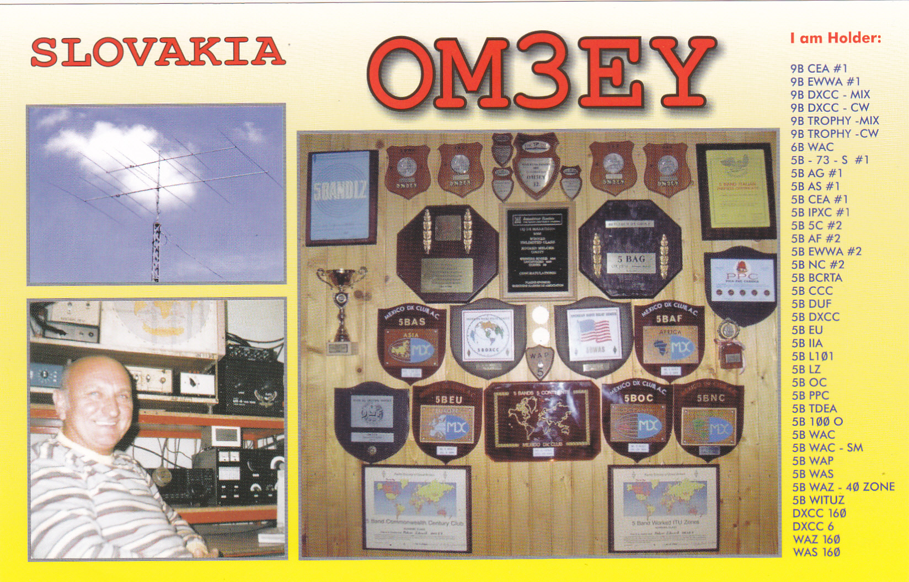

Flash ! DX


 
|
|
|
|

|
|
|
[Back Issues May.2018]
TIME:UTC(JST-09:00)
Report from JA1RJU(PM95sq)
31.May.2018(15:00d)
---------------------------------------------------------------------------
◎ FT8＝50.313MHz(22:50z-00:00z)
W9JN.WA9LFO.KA9CFD.W0VTT.WE9V.N2IC(CA).K9MU.N0AKC.K9CT.N9ISN.W5LUA.K0DU
W9BF.W0AAT.KB7IJ.KE9V.K5DOG.K9TVG.N5WS.W0UO.WO7R.AA7A.W5LDA.K7ULS.K5DG
W5VOM.N7NT.K5BG.WQ5S.K6JR.W3RI.KL7HBK.WO7R.KE7NR.W6OCL.N7EME.W5AKU.W5RCQ
---------------------------------------------------------------------------
↓
W9JN 22:25:00- 50.313-1378 WSJT FT8 -10dB QSO with JA1
N2IC 22:50:15- 50.313-**** WSJT FT8 -24dB QSO with JA8
W9JN 22:50:30- 50.313-1377 WSJT FT8 -13dB QSO with JA1
WA9LFO 22:50:30- 50.313-2083 WSJT FT8 -16dB QSO with JA1
K9MU 22:53:30- 50.313-2358 WSJT FT8 -18dB QSO with JA1
W9JN 23:01:30- 50.313-591 WSJT FT8 -18dB QSO with JA1
K0DU 23:02:00- 50.313-**** WSJT FT8 -11dB QSO with JA1
W9JN 23:03:00- 50.313-2056 WSJT FT8 -12dB QSO with JA1's
WA9LFO 23:07:00- 50.313-2084 WSJT FT8 -12dB QSO with JA1
K0DU 23:07:30- 50.313-1841 WSJT FT8 -15dB QSO with JA4
W9JN 23:08:00- 50.313-2058 WSJT FT8 -12dB QSO with JA1
K0DU 23:11:30- 50.313-1836 WSJT FT8 -16dB QSO with JA1
AC5RN 23:12:00- 50.313-**** WSJT FT8 -16dB QSO with JA0
K9MU 23:17:30- 50.313-2362 WSJT FT8 -20dB QSO with JA1
N2IC 23:22:00- 50.313-1169 WSJT FT8 -19dB QSO with JA1
↓
---------------------------------------------------------------------------
◎ FT8＝50.313MHz(00:00z-10:00z)
K0DU.N2IC.AA7A.N1RWY.K7UGA.KE7NR.K5BG.KU7Z.W5AKU.N7NT.N7BLN.WO7R.K5TCX
K7NN.W0UO.KB7IJ.N5WS.W6OCL.NZ5F.N5JEH.XE2OR.K4RX.N5OK.W6TOD.N2DPF.KG7CW
N5JEH.W6FM.K6ZZ.WB5TUF.
---------------------------------------------------------------------------
↓
9K2GS 05:30:15- 50.313-**** WSJT FT8 -07dB QSO with JA1
↓
9K2GS 05:36:15- 50.313-1142 WSJT FT8 -18dB CQ(LL39)
↓
HA3FOK/MM 05:36:45- 50.313-616 WSJT FT8 +02dB QSO with JA1/2/7
↓
9K2GS 06:16:45- 50.313-1142 WSJT FT8 QSO with JA1/2
HA3FOK/MM 06:16:45- 50.313-616 WSJT FT8 +02dB QSO with JA1/2/7/0
HA3FOK/MM 06:33:30- 50.313-1526 WSJT FT8 -07dB CQ(RN57)
↓
HA3FOK/MM 07:11:30- 50.313-1526 WSJT FT8 -04dB QSO with JA7
↓
HA3FOK/MM 07:12:00- 50.313-1526 WSJT FT8 -07dB QSO with JA1/2/3
HA3FOK/MM 08:01:00- 50.313-1554 WSJT FT8 -07dB CQ(RN67) !
↓
SV1EUU 08:22:30- 50.313-**** WSJT FT8 -11dB into JA1
SV1DH 08:31:30- 50.313-**** WSJT FT8 -11dB QSO with JA7
SV1AHX 08:33:00- 50.313-**** WSJT FT8 into JA0
HA3FOK/MM 08:40:00- 50.313-1531 WSJT FT8 +02dB CQ(RN67) !
IT9PQJ 08:48:30- 50.313-**** WSJT FT8 QSO with JA2
SV8RX 08:48:30- 50.313-**** WSJT FT8 -13dB into JA1
SV1FJA 08:49:00- 50.313-**** WSJT FT8 -17dB into JA1
SV9CVY 08:56:30- 50.313-**** WSJT FT8 -14dB into JA1/0
↓
SV8CS 09:01:30- 50.313-**** WSJT FT8 -11dB into JA1/2
↓
SV8CS 09:14:00- 50.313-**** WSJT FT8 -13dB into JA1
SV8RX 09:14:00- 50.313-**** WSJT FT8 -13dB into JA1
SV1AHX 09:22:00- 50.313-1410 WSJT FT8 -10dB QSO with JA1
SV8RX 09:24:30- 50.313-**** WSJT FT8 -13dB QSO with JA1/2/9/0
SV5DRL 09:51:00- 50.313-**** WSJT FT8 -17dB into JA7
SV5DRL 09:54:00- 50.313-**** WSJT FT8 -16dB into JA7
SV5DRL 09:58:00- 50.313-**** WSJT FT8 -16dB into JA7
↓
SV9CVY 10:31:30- 50.313-**** WSJT FT8 -17dB into JA1
Report from JA1RJU(PM95sq)
30.May.2018(15:00d)
9M6NA 00:49:30- 50.313-**** WSJT FT8 QSO with JA2/3
BG2KAJ 00:49:30 50.313-602 WSJT FT8 -10dB QSO with JA1/2
↓
BD7TBP 01:14:45 50.313-**** WSJT FT8 QSO with JA2
↓
9M6NA 01:21:00- 50.313-**** WSJT FT8 -11dB QSO with JA2
↓
BG8UF 01:22:00- 50.313-**** WSJT FT8 -10dB QSO with JA2
9M6NA 01:35:30- 50.313-**** WSJT FT8 -17dB QSO with JA1/2
↓
9M6NA 02:01:00- 50.313-**** WSJT FT8 QSO with JA4
BG8NBG 02:54:45- 50.313-1772 WSJT FT8 -07dB CQ(OL36)
BH4IGO 03:12:00- 50.313-1114 WSJT FT8 -19dB QSO with BD7TBP
9M6NA 03:15:00- 50.313-**** WSJT FT8 into JA6
HA3FOK/MM 06:29:15- 50.313-1563 WSJT FT8 -16dB CQ(RN06)
HA3FOK/MM 06:29:45- 50.313-1563 WSJT FT8 -08dB QSO with JA1
HA3FOK/MM 06:39:45- 50.313-1543 WSJT FT8 -02dB QSO with JA1's
↓
HA3FOK/MM 06:48:15- 50.313-1534 WSJT FT8 -11dB QSO with JA1's
↓
HA3FOK/MM 06:56:15- 50.313-1528 WSJT FT8 -23dB CQ(RN06)
HA3FOK/MM 06:57:15 50.313-1528 WSJT FT8 -19dB QSO with JA2
9M6NA 06:59:00- 50.313-**** WSJT FT8 -07dB QSO with JA1/7/0
9M6NA 07:03:00- 50.313-**** WSJT FT8 -06dB QSO with JA1/0
↓
HA3FOK/MM 07:06:15 50.313-1522 WSJT FT8 -19dB QSO with JA2
9M6NA 07:39:00- 50.313-**** WSJT FT8 -06dB QSO with JA1/0
↓
HA3FOK/MM 08:01:30 50.313-1522 WSJT FT8 -19dB QSO with JA1
↓
HA3FOK/MM 08:31:30 50.313-**** WSJT FT8 -17dB QSO with JA1
EK7DX 08:41:00- 50.313-**** WSJT FT8 -16dB into JA5
EK7DX 08:45:00- 50.313-**** WSJT FT8 -16dB QSO with JA5
EK7DX 09:00:30- 50.313-**** WSJT FT8 -20dB into JA3/4/5 & BH4IGO
UN7TW 09:02:30- 50.313-**** WSJT FT8 -17dB into JA2
↓
EK7DX 09:03:00- 50.313-**** WSJT FT8 -16dB into JA3/4/5/6
UN6T 09:07:30 50.313-**** WSJT FT8 -19dB QSO with JA2/3/4
↓
EK7DX 09:09:00- 50.313-**** WSJT FT8 QSO with BH4IGO
9M4NA 09:11:30 50.313-**** WSJT FT8 -13dB QSO with JA1/2/3/4
UN7TW 09:12:30 50.313-**** WSJT FT8 -11dB QSO with JA2/3/4
↓
EK7DX 09:17:00- 50.313-**** WSJT FT8 -16dB into JA2/5/6
EK7DX 09:25:00- 50.313-**** WSJT FT8 -12dB into JA2/5/6
EK7DX 09:32:00- 50.313-**** WSJT FT8 -16dB into JA1/6/BA4SI
↓
DU7/PA0HIP 09:50:45- 50.313-**** WSJT FT8 -14dB into JA2/3/0
↓
EK7DX 09:57:30- 50.313-**** WSJT FT8 -13dB QSO with JA6
↓
BA4SI 11:58:45- 50.313-1498 WSJT FT8 -03dB CQ DX(PM01)
↓
IW9HII 11:36:15- 50.313-**** WSJT FT8 -09dB into JA1
SV9CVY 12:40:00 50.313-**** WSJT FT8 QSO with JR&
---------------------------------------------------------------------------
◎ FT8＝50.313MHz(00:50z-14:00z)
BG2KAJ.BG8UF.BD7TBP.BD8NBG.BX2AB.BV7RJ.BD4TH.BH4IGO.BH4TYL.BH4TVU.HL2CFY
HL2KV.BD2XBJ.HL3GOB.BV2FB.DS3DNI.HL3EFM.BA1PK.DS3CHK.DS4AOW.BA4SI.BG6CJR
---------------------------------------------------------------------------
Report from JA1RJU(PM95sq)
29.May.2018(15:00c)
K0GU 01:14:00 50.313-**** WSJT FT8 -07dB into JA7
KL7RRC 01:24:00 50.313-**** WSJT FT8 into JA1
BV7RJ 01:54:00 50.313-**** WSJT FT8 -13dB QSO with JA9
BD4QXF 02:55:00 50.313-1417 WSJT FT8 -16dB QSO with JA1
BH4UTT 03:09:30 50.313-876 WSJT FT8 -01dB QSO with JA1/2
BH4TSU 03:33:15 50.313-**** WSJT FT8 QSO with JA3
HL4CNR 03:56:45 50.313-1553 WSJT FT8 -12dB CQ(PM03) & QSO with JA1/2/0
BH4UTT 03:09:30 50.313-876 WSJT FT8 -01dB QSO with JA1/2
EX8MLT 04:22:30 50.313-**** WSJT FT8 -12dB QSO with JA1/2/3
↓
BG3GRU 05:05:15 50.313-1720 WSJT FT8 -06dB CQ(ON50) QSO with JA1/2/3
↓
4Z5ML 05:05:30 50.313-**** WSJT FT8 -13dB into JA4
↓
DS2GWM 05:19:15 50.313-1002 WSJT FT8 -01dB CQ(PM37) QSO with JA1/2/3
↓
5B4ALJ 05:26:15 50.313-**** WSJT FT8 QSO with JA2/3
↓
5B4ALJ 05:26:15 50.313-**** WSJT FT8 QSO with JA1/2/3
OE4VIE 05:31:30 50.313-**** WSJT FT8 into JA5
5B4ALJ 05:31:15 50.313-**** WSJT FT8 -11dB QSO with JA1/2/3
↓
D1DX 05:40:30 50.313-**** WSJT FT8 into JA2/3/7
↓
5B4ALJ 05:46:15 50.313-**** WSJT FT8 QSO with JA2/3/9
↓
9K2GS 05:46:45 50.313-**** WSJT FT8 -10dB QSO with JA9
↓
5B4ALJ 05:50:15 50.313-**** WSJT FT8 -16dB QSO with JA1/2/3
UT7QF 05:53:15 50.313-**** WSJT FT8 -17dB QSO with JA3
↓
5B4ALJ 05:53:45 50.313-1869 WSJT FT8 -07dB QSO with JA1/2/3
↓
D1DX 05:58:00 50.313-**** WSJT FT8 -19dB into JA2
5B4ALJ 05:58:15 50.313-1869 WSJT FT8 -04dB QSO with JA1/2/3/9
↓
9K2GS 06:07:15 50.313-968 WSJT FT8 -19dB QSO with JA9
9K2GS 06:15:15 50.313-1149 WSJT FT8 -09dB QSO with JA1/2/9
YO3DDZ 06:15:30 50.313-**** WSJT FT8 -09dB QSO with JA9
5B4ALJ 06:19:45 50.313-1869 WSJT FT8 -04dB QSO with JA1/2/3/9
D1DX 06:26:00 50.313-**** WSJT FT8 -19dB into JA7
9K2GS 06:28:45 50.313-1149 WSJT FT8 -06dB QSO with JA1/2/7/0
↓
9K2GS 06:40:45 50.313-1998 WSJT FT8 -16dB QSO with JA1/2/7/9
9K2GS 06:52:45 50.313-1999 WSJT FT8 -06dB QSO with JA1/7/9/0
9K2GS 06:54:15 50.313-1995 WSJT FT8 -03dB QSO with UK9AA
9K2GS 07:00:15 50.313-1990 WSJT FT8 -07dB QSO with JA1/2
9K2GS 07:12:45 50.313-1995 WSJT FT8 -07dB QSO with JA2
BU2BV 07:21:45 50.313-1263 WSJT FT8 -02dB QSO with JA1
UT7TW 07:22:00 50.313-**** WSJT FT8 -15dB QSO with JA1/2/0
DG8LPG 07:28:00 50.313-**** WSJT FT8 -17dB into JA1
↓
5B4ALX 07:33:00 50.313-**** WSJT FT8 -08dB QSO with JA1/3
4X4DK 07:53:00 50.313-945 WSJT FT8 -16dB QSO with JA1/7/0
9M2TO 07:54:00 50.313-**** WSJT FT8 -15dB into JA1 QSO with JA1
BV6CC 07:55:-- 50.102 CW RST559 CQ
HA3FOK/mm 07:58:00 50.313-**** WSJT FT8 -19dB into JR6/JA1
4X4DK 08:11:30 50.313-**** WSJT FT8 -12dB QSO with JA5/6/7
↓
IW9HII 08:32:30 50.313-**** WSJT FT8 -12dB into JA1
9M2TO 08:40:30 50.313-2038 WSJT FT8 -15dB QSO witj JA1/3
3W3B 08:40:30 50.313-**** WSJT FT8 -11dB QSO witj JA1/2/7/0
9M2TO 09:04:30 50.313-2006 WSJT FT8 -24dB QSO witj JA8
9M2TO 09:16:30 50.313-2006 WSJT FT8 -26dB QSO witj JA7
9M2/JG3TTO 09:19:15 50.313-**** WSJT FT8 -03dB QSO witj JA1/2/7/0
↓
HA3FOK/mm 09:52:45 50.313-2052 WSJT FT8 +01dB QSO with JA1/2/3/9/0/JR6
9M2TO 10:08:30 50.313-1985 WSJT FT8 -19dB CQ(OJ05)
E20WXA 11:26:15 50.313-**** WSJT FT8 into JA6(PL36)
IW9HII 11:32:45 50.313-1120 WSJT FT8 -05dB QSO with JS6 & into JA1
↓
--------------------------------------------------------------------------------
◎ FT8＝50.313MHz(00:00z-12:00z)
HL4COM.BV7CW.BV2KI.BH4IGO.BV7RJ.HL2CFY.DS4GKA.DS2XRJ.DS2XBJ.HL3EFM.
BX2AB.BD4WB.BV6CC.
--------------------------------------------------------------------------------
Report from JA1RJU(PM95sq)
28.May.2018(15:00e)
BD8NBG 01:58:00 50.313-1666 WSJT FT8 +05dB QSO with JA1
BD8TE 02:01:45 50.313-1907 WSJT FT8 -18dB CQ(OL15)
BV7CW 02:02:30 50.313-**** WSJT FT8 into JA1
BD8NBG 02:05:00 50.313-1670 WSJT FT8 +04dB CQ(OL36)
BD4QXF 02:06:00 50.313-**** WSJT FT8 QSO with JA3
BG6CJR 02:07:45 50.313-2220 WSJT FT8 +01dB QSO with JA1 & BD8NBG
BG4DRL 02:09:15 50.313-2202 WSJT FT8 +10dB QSO with BV7CW
BX2AB 02:10:00 50.313-**** WSJT FT8 QSO with JA1/2
BD4TH 02:13:30 50.313-**** WSJT FT8 -01dB QSO with JA1
BD8NBG 02:16:00 50.313-1677 WSJT FT8 -14dB CQ(OL36)
BG6CJR 02:17:45 50.313-2222 WSJT FT8 +16dB QSO with JA5
BG4DRL 02:25:00 50.313-2200 WSJT FT8 +13dB QSO with JA1/3
BV7RJ 02:28:00 50.313-**** WSJT FT8 QSO with JA6
BD4QXF 03:03:00 50.313-1814 WSJT FT8 -08dB QSO with JA2 & 9M4DXX
BD4CNR 03:05:30 50.313-1139 WSJT FT8 +10dB QSO with JA3/7
HL1LUA 03:17:15 50.313-862 WSJT FT8 -01dB CQ(PM37)
BD8NW 03:29:45 50.313-1529 WSJT FT8 -04dB QSO with JA1/3/7
UN6T 08:53:00 50.313-557 WSJT FT8 -05dB QSO with JA2/3/4/9
↓
UN6T 09:10:30 50.313-562 WSJT FT8 +06dB QSO with JA1/2/3/4/9
↓
UN3GX 09:25:-- 50.102 CW RST599 CQ
UN3GX 09:27:-- 50.102 CW RST599/599 QSO
↓
UN7TW 09:48:00 50.313-1280 WSJT FT8 -01dB QSO with JA1/2/3/4/5/6/9/0
UN7TW 09:48:00 50.313-1280 WSJT FT8 +02dB QSO with JA1-JA0
↓
UN6T 10:08:00 50.313-1667 WSJT FT8 +13dB QSO with JA1-JA0
↓
UN7TW 10:16:30 50.313-1286 WSJT FT8 +01dB QSO with JA1/2/0
UN7TW 10:24:30 50.313-1277 WSJT FT8 +02dB QSO with JA1/2
↓
UN6T 10:28:00 50.313-1658 WSJT FT8 +10dB QSO with JA1/2/3
UN6T 10:35:30 50.313-1659 WSJT FT8 +14dB QSO with JA1/3/7/9/BK1PK
↓
UN6T 11:01:30 50.313-1655 WSJT FT8 +06dB QSO with JA1/9/0/HL2CFY
UN7TW 11:02:00 50.313-1676 WSJT FT8 -09dB QSO with JA5
BG1KAP 11:11:45 50.313-1749 WSJT FT8 -14dB CQ(ON80)
UN7TW 11:22:15 50.313-1167 WSJT FT8 -18dB QSO with JA3
HL3EFM 11:25:30 50.313-1127 WSJT FT8 -19dB CQ(PM36)
↓
UN6T 11:45:15 50.313-1658 WSJT FT8 -18dB QSO with JA6
↓
UN8GC 14:06:30 50.313-1490 WSJT FT8 -16dB CQ(MN83)
UN8GC 14:08:30 50.313-1430 WSJT FT8 -17dB CQ
UN8GC 14:31:30 50.313-1494 WSJT FT8 -13dB QSO with BA4SI
UN8GC 14:33:30 50.313-1494 WSJT FT8 -17dB CQ(MN83) & into JA1/2/0
Report from JA1RJU(PM95sq)
27.May.2018(15:00e)
--------------------------------------------------------------------------
(FT8=50.313MHz into JA7QVI=QM08)
AA4FF.K5LA.K9VSW.KB7IJ.KF7NP.KG5CCI.KI4GGJ.KL7HBK.KS4YT.N9BX
W0VTT.W5LUA.W5VYH.W7OJT.WX4G
---------------------------------------------------------------------------
KI4GGJ 23:29:00 50.313-**** WSJT FT8 -15dB into JA7
KI4GGJ 23:33:30 50.313-**** WSJT FT8 -13dB into JA1
KI4GGJ 23:37:30 50.313-**** WSJT FT8 -03dB into JA7
KL7HBK 23:29:30 50.313-**** WSJT FT8 into JA1
KL7HBK 23:34:30 50.313-1473 WSJT FT8 -11dB CQ(BO49) into JA7
W0VTT 23:40:15 50.313-**** WSJT FT8 -02dB QSO with JA7
KB7IJ 23:55:30 50.313-**** WSJT FT8 -19dB into JA1
WX4G 00:05:30 50.313-**** WSJT FT8 -15dB into JA1/7
K5LA 00:20:00 50.313-**** WSJT FT8 -15dB into JA1
BD3PXM 00:58:30 50.313-1326 WSJT FT8 -15dB QSO with JA7
BA1PK 01:09:30 50.313-1701 WSJT FT8 -13dB QSO with JA1
↓
EA7HG 06:31:00 50.313-**** WSJT FT8 -18dB QSO with JA2
EA8DBM 06:40:00 50.313-**** WSJT FT8 -18dB QSO with JA2
EA8DBM 06:57:00 50.313-**** WSJT FT8 -18dB QSO with JA2
EC1CT 06:59:30 50.313-**** WSJT FT8 -19dB into JA2
SV9CVY 07:08:00 50.313-**** WSJT FT8 -06dB QSO with JA0
SV1DH 07:08:30 50.313-**** WSJT FT8 -12dB into JA0
EA8DBM 07:11:00 50.313-**** WSJT FT8 -15dB QSO with JA8
SV1EDU 07:11:00 50.313-**** WSJT FT8 -06dB into JA0
EA1SA 07:16:00 50.313-**** WSJT FT8 -20dB into JA8
SV1DH 07:21:30 50.313-**** WSJT FT8 -11dB into JA9/0
EC1CT 07:44:30 50.313-**** WSJT FT8 -19dB into JA9
BA4SI 07:56:00 50.313-**** WSJT FT8 into JA2
DU7/PA0HIP 08:00:00 50.313-**** WSJT FT8 -18dB into JA1/3/6/9
9M4DXX 08:16:30 50.313-**** WSJT FT8 -15dB into JA/0/JR6
HL3EFM 08:34:30 50.313-**** WSJT FT8 -08dB QSO with JA4
VR2ZLK 08:40:30 50.313-**** WSJT FT8 -16dB into JA1
9M4DXX 08:43:00 50.313-**** WSJT FT8 -15dB QSO with JA3/0
HL2NF 08:49:15 50.313-**** WSJT FT8 -13dB QSO with JA4
↓
Report from JA1RJU(PM95sq)
26.May.2018(15:00d)
--------------------------------------------------------------------------------
(FT8=50.313MHz 23:37-00:07z into JA7QVI=QM08)
K6DLB.AC6T.AD6KH.K6DLB.K6IGP.K6WGX.K6ZZ.K7JA(CA).KF6LYF.N6CA.N6ED.N6MW.N6RV
N6WS.NA6L.NC6K.W6GLB.W6GLS.W6IT.W6ZAR.W7IV(CA).W7OJT(AZ).WA6APQ
(FT8=50.313MHz into JA5FFJ=PM63)
N6WS.K7JA.AD6KH.N6RV.NA6L.K6ZZ.NC6K
--------------------------------------------------------------------------------
VR2ZLK 01:53:15 50.313-**** WSJT FT8 into JA1
9M4DXX 02:21:30 50.313-**** WSJT FT8 -17dB into JA1
9M2TO 02:39:00 50.313-**** WSJT FT8 -18dB QSO with JA1/7
↓
9M4DXX 02:54:30 50.313-**** WSJT FT8 -17dB QSO with JA7
BD4TH 03:08:30 50.313-667 WSJT FT8 -12dB QSO with JA1/2/3
9M4DXX 06:54:00 50.313-**** WSJT FT8 -13dB QSO with JA1/2
↓
9M2TO 07:01:00 50.313-**** WSJT FT8 -13dB QSO with JA1/2
↓
9M4DXX 07:31:00 50.313-2178 WSJT FT8 -17dB CQ(OJ05)
9M4DXX 07:33:00 50.313-2179 WSJT FT8 -14dB QSO with JA1/2/7/0
↓
9M2TO 07:33:30 50.313-1946 WSJT FT8 -17dB CQ(OJ05) & QSO with JA1/2/3/0
↓
DF9CY 07:34:00- 50.313-**** WSJT FT8 -13dB into JR6
↓
9M4DXX 07:41:30 50.313-2179 WSJT FT8 -15dB CQ(OJ05)
9M4DXX 07:41:30 50.313-2179 WSJT FT8 -15dB CQ(OJ05) & QSO with JA1/4/7/9/0
↓
4X4DK 08:06:00- 50.313-**** WSJT FT8 -15dB into JA4
↓
9M4DXX 08:10:30 50.313-2176 WSJT FT8 -08dB/-14dB(QSO=40W)
9M4DXX 08:17:30 50.313-2176 WSJT FT8 -04dB QSO with JA1/2/3
↓
9M2TO 08:19:30 50.313-1944 WSJT FT8 -12dB QSO with JA1/2/3/7
↓
9M4DXX 08:48:30 50.313-**** WSJT FT8 -16dB QSO with JA8
9M2TO 08:50:30 50.313-1944 WSJT FT8 -12dB QSO with JA1/2/3/7/8
↓
---------------------------------------------------------------------------------
◎ FT8＝50.313MHz(23:50z-10:30z)
BV2KI.BG6FCB.BD8NBG.BD7OXR.HL2CFY.BG8UF.BD7TBP.HL4CCM.BD8TE.
BA1PK.BD4TH.BX2AFO.BV3UF.HL2NF.HL4CNR.BX2AB.DS4EDI.BH1TSU.
HL2KV.
---------------------------------------------------------------------------------
Report from JA1RJU(PM95sq)
25.May.2018(15:00d)
EA5RA 03:22:30- 50.313-1077 WSJT FT8 into JS6(PL14)
BV7RJ 03:49:45- 50.313-813 WSJT FT8 -13dB CQ(PL02)
BV2FB 06:09:45- 50.313-**** WSJT FT8 into JA2
9M6NA 06:10:00- 50.313-763 WSJT FT8 -14dB into JA1(QM07)
YO3DDZ 06:26:45 50.313-**** WSJT FT8 into JA2
SV1LK 06:01:45- 50.313-**** WSJT FT8 -18dB into JA2
SV1DH 06:03:00- 50.313-**** WSJT FT8 -16dB QSO with JA2
DU7/PA0HIP 07:55:15- 50.313-1785 WSJT FT8 -09dB QSO with JA1
DU7/PA0HIP 08:07:15- 50.313-1785 WSJT FT8 -12dB CQ(PK10)
BH4IGO 08:09:15- 50.313-1108 WSJT FT8 -16dB CQ(OM86)
DU7/PA0HIP 08:13:15- 50.313-**** WSJT FT8 -09dB QSO with JA1
↓
9M6NA 08:30:00- 50.313-1005 WSJT FT8 +02dB QSO with JA1
↓
9M6NA 08:46:30- 50.313-1004 WSJT FT8 -09dB QSO with VR2XYL
↓
9M6NA 09:11:30- 50.313-1009 WSJT FT8 -01dB QSO with JA1/2/7/0
↓
9M2TO 09:21:00- 50.313-573 WSJT FT8 -14dB CQ(OJ05)
↓
9M6NA 09:40:00- 50.313-1008 WSJT FT8 -03dB QSO with JA1/2/7/0
↓
BG6CJR 10:10:00- 50.313-477 WSJT FT8 -12dB QSO with JA1/2/0
↓
BG6CJR 10:18:15- 50.313-473 WSJT FT8 -22dB CQ(OM90)
Report from JA1RJU(PM95sq)
24.May.2018(15:00d)
BX2AFO 01:31:00- 50.313-**** WSJT FT8 -05dB QSO with JA1/0
9M6NA 01:43:00- 50.313-**** WSJT FT8 into JA1/2
BV1EK 05:45:00- 50.313-1399 WSJT FT8 -11dB QSO with JA1/3/9
BX2AFO 07:40:00- 50.313-999 WSJT FT8 -22dB QSO with JA1
BV7CW 08:02:00- 50.313-1347 WSJT FT8 -12dB QSO with JA1/0
HL2KV 08:36:30- 50.313-**** WSJT FT8 -05dB QSO JA1/0
↓
BX2AFO 09:00:00- 50.313-931 WSJT FT8 -16dB QSO with JA4
↓
BV7CW.BV7FO.BV2KI.BD7OXR.BV3UF.BD8TE...
↓
BV3VF 09:40:30- 50.313-1585 WSJT FT8 -13dB QSO with JA1
BD7OXR 09:45:30- 50.313-646 WSJT FT8 -08dB QSO with JA2
BV7FO 10:08:30- 50.313-929 WSJT FT8 -20dB CQ(PL02)
BV2FB 10:24:00- 50.313-1047 WSJT FT8 -17dB QSO with JA3
BV7CW 10:25:00- 50.313-1553 WSJT FT8 -24dB CQ(PL02)
Report from JA1RJU(PM95sq)
23.May.2018(15:00d)
DU1/JH3FJE 00:29:30 50.313-**** WSJT FT8 -14dB into JA1
9M6NA 06:16:30- 50.313-**** WSJT FT8 into JA1/0
↓
BW/JH3GGC 06:35- 50.135 SSB RS59 QSO with into JA1-JA6
DU7/PA0HIP 06:41:00- 50.313-2229 WSJT FT8 -16dB QSO with JA1/2/0
DU6GG 06:45:30- 50.313-1695 WSJT FT8 -07dB QSO with JA1/2/3/0
↓
JT1BU 08:41:30- 50.313-545 WSJT FT8 -12dB QSO with JA4
JT1BU 09:04:00- 50.313-613 WSJT FT8 -01dB QSO with JA1/2/3/4/5
9M6NA 09:15:00- 50.313-1021 WSJT FT8 -03dB QSO with JA1/2/3/4/9
↓
9M6NA 09:33:30- 50.313-1019 WSJT FT8 +07dB QSO with JA1/0
DU1/JH3FJE 09:47:00- 50.313-1368 WSJT FT8 -16DB QSO with JA1/2/0
R8OD 09:58:30- 50.313-1019 WSJT FT8 into JR6
VR2XYL 10:26:00- 50.313-1399 WSJT FT8 into JA3
9M6NA 10:11:00 50.313-1250 WSJT FT8 -11dB QSO with JR6
↓
YL2AO 12:18:00- 50.188 WSJT JT65a -26dB EME QSO (JA7QVI)
---------------------------------------------------------------------------------
◎ FT8＝50.313MHz(00:00z-14:00z)
BV2KI.BV7FO.BD7BW.BM3GFU.DS1JFY.BD8NBG.BV2VIA.BG4NII.BD5XX.BV2BV.BV7RJ
HL3EQG.BX2AB.HL1LLA.BV3UF.DS4FQS.BD4TH.BD4QXF.DS2WM.BU2BV.BV4VR.BV7CW
HL1LUA.HL4CCM.DS3CHK.DS4GKA.HL3GOB.HL2CFY.BG5UER.HL4CNN.BH4SYG.VR2XYL
---------------------------------------------------------------------------------
Report from JA1RJU(PM95sq)
22.May.2018(15:00c)
K0DU 23:59:-- 50.313-**** WSJT FT8 -06dB QSO with JA7
-----------------------------------------------------------------------------
KL7HBK 00:07:00- 50.313-**** WSJT FT8 +10dB QSO with JA1/2/3/7
N6ML 00:36:-- 50.313-**** WSJT FT8 -02dB QSO with JA7
N6KOG 00:41:-- 50.313-**** WSJT FT8 -02dB QSO with JA7
↓
JT1CO 04:41:15- 50.313-**** WSJT FT8 into JA1/0
SV1DH 05:16:00- 50.313-**** WSJT FT8 QSO with JA1
UW1HM 05:21:30- 50.313-**** WSJT FT8 QSO with JA2
JT1CO 05:23:15- 50.313-1567 WSJT FT8 QSO with JA1/2/3/4/7/9/0
↓
IK0FTA 05:46:00 50.313-**** WSJT FT8 QSO with JA2/3
SV8RX 05:57:00- 50.313-**** WSJT FT8 QSO with JA7
IS0AWZ 06:03:30- 50.313-**** WSJT FT8 -20dB QSO with JA1/2
US8ICM 06:03:45- 50.313-**** WSJT FT8 -20dB QSO with JA2
I0JX 06:09:00- 50.313-**** WSJT FT8 -07dB into JA1/2/7
4O6AH 06:31:30- 50.313-**** WSJT FT8 -04dB into JA7
4O6AH 06:36:00- 50.313-**** WSJT FT8 into JA9
SV5DKL 06:36:30- 50.313-**** WSJT FT8 into JA1
IK7FPV 06:35:30- 50.313-**** WSJT FT8 -09dB QSO with JA2
IK5ACO 06:36:30- 50.313-**** WSJT FT8 into JA1/7/8
SV5DKL 06:36:30- 50.313-**** WSJT FT8 into JA1
I6WJB 06:37:30- 50.313-**** WSJT FT8 -05dB into JA1/7/0
IW9CTJ 06:40:00- 50.313-**** WSJT FT8 -08dB into JA7
SV5DKL 06:36:30- 50.313-**** WSJT FT8 into JA1
IZ5EME 06:47:30- 50.313-**** WSJT FT8 -16dB into JA1
I0JX 06:47:45- 50.313-**** WSJT FT8 into JA7
IT9RZR 06:48:15- 50.313-**** WSJT FT8 -18dB into JA2
IS0AWZ 06:48:30- 50.313-**** WSJT FT8 -20dB QSO with JA7/0
IZ5EME 06:48:30- 50.313-**** WSJT FT8 QSO with JA1
SV1CNS 06:49:30- 50.313-**** WSJT FT8 -14dB into JA1
IK7EOT 06:49:30- 50.313-**** WSJT FT8 -13dB into JA7
4O6AH 06:50:30- 50.313-**** WSJT FT8 -16dB into JA9/0
IK0FTA 06:52:00- 50.313-**** WSJT FT8 -07dB QSO with JA7
SV9CVY 06:55:30- 50.313-**** WSJT FT8 -17dB into JA1/7/9/0
SV1AHX 07:00:00- 50.313-**** WSJT FT8 -18dB into JA1/7/0
I6WJB 07:02:30- 50.313-**** WSJT FT8 -07dB into JA7
IT9RZR 07:05:45- 50.313-**** WSJT FT8 QSO with JA2/3
IK5GQK 07:12:30- 50.313-**** WSJT FT8 -11dB into JA7
IZ5EME 07:15:00- 50.313-**** WSJT FT8 -07dB into JA7
E73S 07:15:30- 50.313-**** WSJT FT8 -14dB into JA7
IK4DRY 07:16:15- 50.313-**** WSJT FT8 -11dB into JA7
E73S 07:17:00- 50.313-**** WSJT FT8 -14dB QSO with JA7
IT9RZR 07:21:15- 50.313-**** WSJT FT8 -20dB QSO with JA1/2/7/0
I0VHL 07:21:15- 50.313-**** WSJT FT8 -16dB into JA1
IK5ACO 07:41:00- 50.313-**** WSJT FT8 -11dB QSO with JA1/7/0
IW9HRZ 07:42:45- 50.313-**** WSJT FT8 QSO with JA8
SP8AWL 07:45:45- 50.313-**** WSJT FT8 -13dB QSO with JA7
EA6VQ 07:55:00- 50.313-**** WSJT FT8 -10dB QSO with JA7
T77C 07:58:00- 50.313-**** WSJT FT8 into JA7
UK8FF 08:05:45- 50.313-**** WSJT FT8 -20dB into JA1
UK8FF 08:07:30- 50.313-1744 WSJT FT8 -20dB QSO with JA1
UK8FF 08:19:00- 50.313-1742 WSJT FT8 -08dB/-05dB(QSO)
↓
UK8FF 08:23:00- 50.313-1744 WSJT FT8 -00dB QSO with JA1/7
EA7HG 08:23:00- 50.313-**** WSJT FT8 -17dB QSO with JA5
UK8FF 08:23:00- 50.313-1744 WSJT FT8 -04dB QSO with JA1/7/0
↓
UK8FF 08:35:00- 50.313-1744 WSJT FT8 -01dB QSO with JA1/7/9/0
UK8FF 09:03:30- 50.313-1744 WSJT FT8 -16dB QSO with JA1/7/9/0
IK0FTA 09:03:30- 50.313-1744 WSJT FT8 -17dB QSO with JA1
UK8FF 09:04:30- 50.313-1744 WSJT FT8 -16dB QSO with JA7
UN7TW 09:05:00- 50.313-**** WSJT FT8 -10dB QSO with JA1
EX8MJ 09:06:00- 50.313-**** WSJT FT8 QSO with JA7
UK8FF 09:09:00- 50.313-1739 WSJT FT8 -16dB QSO with JA0
↓
UT7TW 09:17:00- 50.313-2092 WSJT FT8 -10dB/+01dB(QSO)
EX8MJ 09:17:15- 50.313-**** WSJT FT8 QSO with JA0
↓
US5WE 09:25:00- 50.313-**** WSJT FT8 -13dB QSO with JA1
UN6T 09:33:00- 50.313-**** WSJT FT8 -05dB QSO with JA7
↓
(UN7TW. UN6T.IT9RZR.IK5ACO.US5WE.IT9RZR.US5WE.IK5PWJ.IK0FTA.IK4DRY.etc...)
↓
JT1BU 10:59:30- 50.313-677 WSJT FT8 -00dB QSO with JA1/7/9
↓
I6WJB 10:27:00- 50.313-**** WSJT FT8 -20dB into JA1
↓
UN6T 11:16:30- 50.313-**** WSJT FT8 -20dB QSO with JA1/7
↓
9A2DS 11:25:-- 50.091 CW into JA2
S57RR 11:36:-- 50.313-**** WSJT FT8 -16dB into JA9
↓
UT7TW 12:00:30- 50.313-**** WSJT FT8 QSO with JA1
↓
EI4DQ 13:00 50.194 WSJT JT65a -27dB EME QSO with JA2
---------------------------------------------------------------------------------
◎ FT8＝50.313MHz(23:50z-14:30z)
BV1EK.DS4EOI.6K2IGX.BG4VRG.HL2KV.BD3GNI.DS3EXX.BH4HYL.HL5BMX
HL1LLA.BG2AUE.HL2NF.BG3UTD.HL3EFM.HL3AMO.BG4TMC.
---------------------------------------------------------------------------------
Report from JA1RJU(PM95sq)
21.May.2018(15:00c)
W7WEM(NV) 22:19:-- 50.313-**** WSJT FT8 -21dB into JA7
WB8VLC(OR) 22:34:-- 50.313-**** WSJT FT8 -10dB into JA7
W3XS(OR) 22:48:-- 50.313-**** WSJT FT8 -05dB into JA7
N0DU 23:06:-- 50.313-**** WSJT FT8 -03dB into JA8
WB8VLC(OR) 23:07:-- 50.313-**** WSJT FT8 -12dB into JA8
K7MAC 23:48:-- 50.313-**** WSJT FT8 QSO with JA8
-----------------------------------------------------------------------------------
IT9RZR 07:30:45 50.313-**** WSJT FT8 -16dB into JA7
SV9CVY 07:36:- 50.313-**** WSJT FT8 QSO wiyh JA1/7
I6WJB 07:38:30- 50.313-**** WSJT FT8 into JA7 & QSO
HA5JI 07:46:45- 50.313-**** WSJT FT8 into JA9
SV9CVY 08:12:30- 50.313-**** WSJT FT8 QSO with DS4EOI
5B4ALJ 08:24:30- 50.313-**** WSJT FT8 QSO with DS4EOI
↓
9M6NA 08:30:30- 50.313-1193 WSJT FT8 -07dB QSO with JA2
9M6NA 08:31:00- 50.313-1193 WSJT FT8 -07dB/QSO with JA1/2/7
9M6NA 08:41:30- 50.313-1193 WSJT FT8 -07dB/-11dB(QSO)
↓
9M6NA 09:16:00- 50.313-1193 WSJT FT8 into JA1/2
↓
HL3EQG 09:42:00- 50.313-1043 WSJT FT8 -19dB QSO with BH1TSU
↓
---------------------------------------------------------------------------------
◎ FT8＝50.313MHz(23:50z-10:00z)
DS4EOI.HL4CNR.BV1EK.HL1CFY.BG3UTD.HL2KV.BH4TQX.BH1TSU.DS3CHK.BG1REN
HL3EQG.
---------------------------------------------------------------------------------
Report from JA1RJU(PM95sq)
20.May.2018(15:00c)
K6QXY 23:39 50.091 CW QSO with JA7
NA6XX 23:54 50.083 CW QSO with JA7
-----------------------------------------------------------------------------
K6ZJU 00:03:00 50.313-**** WSJT FT8 QSO with JA1(QM06)
K6ZJU 00:03:30 50.313-**** WSJT FT8 -14dB into JA4
↓
NA6XX 00:09 50.091 CW QSO with JA1/2/3
K6QXY 00:15 50.089 CW QSO with JA7
↓
N6ML 00:32:00- 50.313-**** WSJT FT8 -13dB QSO with JA1/2/3
K6KLY 00:32-30- 50.313-**** WSJT FT8 -11dB QSO with JA1/2/3/6
N6ML 00:33:00- 50.313-1980 WSJT FT8 -14dB QSO with JA7
K6KLY 00:35-30- 50.313-1294 WSJT FT8 -17dB QSO with JA1
K9YC(CA) 00:37:30- 50.313-**** WSJT FT8 -16dB QSO with JA1/2/3/4/7
N6ML 00:38:00- 50.313-1978 WSJT FT8 -13dB QSO with JA1/2/3/4/6
W5LDA 00:55:00- 50.313-1980 WSJT FT8 -17dB into JA4/9
K6KLY 00:56:00- 50.313-**** WSJT FT8 -11dB QSO with JA1/2/3/6
KV7K 00:57:30- 50.313-**** WSJT FT8 -20dB QSO with JA4
N0LL 00:57:30- 50.313-**** WSJT FT8 -11dB QSO with JA1/2/3/6
K6KLY 01:01:00- 50.313-**** WSJT FT8 -14dB QSO with JA4/9
WA6OSX 01:19:00- 50.313-**** WSJT FT8 -15dB QSO with JA7
KH7Y(CA) 01:24:00- 50.313-**** WSJT FT8 QSO with JA7
KH7Y(CA) 01:34:00- 50.313-**** WSJT FT8 -17dB QSO with JA2/7
K9YC(CA) 01:34:30- 50.313-**** WSJT FT8 -19dB QSO with JA7
W7EW 01:35:00- 50.313-**** WSJT FT8 -11dB QSO with JA7
W6PQL 01:35:30- 50.313-**** WSJT FT8 -12dB QSO with JA7
K9YC(CA) 01:39:00- 50.313-**** WSJT FT8 -17dB QSO with JA6/7
KH7Y(CA) 01:40:00- 50.313-**** WSJT FT8 -18dB QSO with JA1/4
W7EW 01:41:30- 50.313-**** WSJT FT8 -11dB QSO with JA1/7
↓
9M4DXX 05:54-30- 50.313-**** WSJT FT8 into JA4
4F3OM 06:28:30- 50.313-**** WSJT FT8 +04dB into JA1
YC2EEE 06:33:30- 50.313-**** WSJT FT8 -06dB into JA1
↓
EI4DQ 10:20 50.180 WSJT JT65a -27dB EME QSO with JA7QVI
ZS4TX 10:43 50.188 WSJT JT65a -13dB EME QSO with JA7QVI
--------------------------------------------------------------------------------
◎ FT8＝50.313MHz(23:00z-09:40z)
DS3CHK.HL2CFY.BD4WB.BD6IF.HL1LLA.BH4TVU.HL2AMO.HL2ADY.DS4EOI.BG4VRG
BG8DIV.HL2NF.BA1PK.BG4NNI.BG3UTD.BD7BW.BG5UER.BG5IFW.HL2DBP.HL2KV
BH4SPN.
--------------------------------------------------------------------------------
Report from JA1RJU(PM95sq)
19.May.2018(15:00d)
◎ 「第47回東北6SG & 全国VSGミーティング in 宮城」のスケジュールが決まりました。
詳細は「Flash News」のコーナーを参照下さい。
----------------------------------------------------------------------------
◎ FT8:50.313MHz (00:10z-13:30z)
HL1LLA.HL2NF.BD4WB.BM3GFU.BH1TIX.BV3UF.BD8NBG.BA5DX.BV7RJ.BD7BW.BD7TBP
HL2ADY.BD7OXR.BD7OX.HL1JLF.DS3BBS.BV1EK.DS3DNT.BG4NNI.BV2FB.BG1LEN
BV7CW.BH5HAI.BH4TYL.BU2BV.BG4DRL.BH8NSC.BV7FO.HL3EFM.VR2VAZ.BV6CC.
DS4EOI.DS2GMM.BD6IF.BH1CSF.BH1TSU.
----------------------------------------------------------------------------
HL2KV 00:10:45 50.313-1703 WSJT FT8 -11dB QSO with JA1
↓
9K2NO 04:55:30- 50.313-1411 WSJT FT8 -18dB into JA2
9K2NO 05:04:00- 50.313-**** WSJT FT8 -11dB into JA5
↓
Report from JA1RJU(PM95sq)
18.May.2018(15:00d)
N7BT 00:27:30- 50.313-**** WSJT FT8 into JA2
W7FI 00:26:00- 50.313-**** WSJT FT8 into JA1/2/7
VE7DAY 00:29:00- 50.313-**** WSJT FT8 QSO with JA7
W7BA 00:30:30- 50.313-**** WSJT FT8 QSO with JA7
WA7ZWG 00:31:00- 50.313-**** WSJT FT8 into JA1
KL7HBK 00:34:00- 50.313-**** WSJT FT8 QSO with JA1
W7OM 00:36:00- 50.313-**** WSJT FT8 QSO with JA7
K7OFT 00:38:00- 50.313-**** WSJT FT8 -15dB into JA1
VE7DAY 00:39:30- 50.313-**** WSJT FT8 -20dB into JA1
N7BT 00:43:30- 50.313-**** WSJT FT8 -15dB QSO with JA2/0
N7RO 00:43:30- 50.313-**** WSJT FT8 into JA0
↓
EX8MLT 03:05:15- 50.313-1534 WSJT FT8 -13dB QSO with JA5
EX8MLT 04:01:30- 50.313-1532 WSJT FT8 QSO with BG8DIV
SV1DH 04:22:00- 50.313-1991 WSJT FT8 into JA2
UT8IO 04:55:30- 50.313-1325 WSJT FT8 QSO with JA6
UN7TW 04:57:30- 50.313-1842 WSJT FT8 QSO with JA6
SV2DCD 05:41:00- 50.313-**** WSJT FT8 QSO with JA1
SV1DH 05:44:00- 50.313-**** WSJT FT8 -10dB QSO with JA1
SV9CVY 05:46:30- 50.313-**** WSJT FT8 QSO with JA1
9K2GS 05:50:15- 50.313-**** WSJT FT8 QSO with JA2/3/4/5/6
UT8IO 05:56:30- 50.313-**** WSJT FT8 -14dB QSO with JA1
9K2GS 06:03:15- 50.313-**** WSJT FT8 -11dB QSO with JA1/2/3/4/5/6
SV1DH 06:06:30- 50.313-**** WSJT FT8 -11dB QSO with JA5/6
SV1AHX 06:12:00- 50.313-**** WSJT FT8 -17dB QSO with JA1
9K2GS 06:17:15- 50.313-755 WSJT FT8 -08dB QSO with JA1/2/3/4
UR0MC 06:30:30- 50.313-1083 WSJT FT8 QSO with JA1/2/3/4/5
5B4ALJ 06:33:30- 50.313-968 WSJT FT8 into JA3
SV1EDU 06:36:30- 50.313-**** WSJT FT8 -21dB into JA1/9
Z32KF 06:38:15- 50.313-1314 WSJT FT8 into JA2
SV8DTD 06:39:45- 50.313-1622 WSJT FT8 -19dB into JA1
SV1DH 06:45:00- 50.313-**** WSJT FT8 -17dB into JA1
UT7QF 06:44:30- 50.313-2149 WSJT FT8 into JA5
SV8RX 06:52:00- 50.313-1424 WSJT FT8 QSO with JA1/4/5/9
KL7HBK 06:57:00- 50.313-1145 WSJT FT8 -14dB into JA4/5
SV9CVY 06:57:00- 50.313-2552 WSJT FT8 into JA1/3/4/5
AN5U 07:02:45- 50.313-931 WSJT FT8 into JA3
4K1SWE 07:25:00- 50.313-737 WSJT FT8 into JA4
SV2DCD 07:54:00- 50.313-**** WSJT FT8 into JA4/5
SV1DH 08:01:00- 50.313-2459 WSJT FT8 -14dB QSO with JA4/5
UR0MC 08:14:30- 50.313-808 WSJT FT8 -13dB QSO with JA3/4
9K2HN 08:16:30- 50.313-**** WSJT FT8 -07dB QSO with JA1/2/3/4/5
5B4ALJ 08:25:30- 50.313-2223 WSJT FT8 -23dB into JA3
9K2HN 08:26:30- 50.313-1642 WSJT FT8 -13dB CQ(LL39) & QSO with JA1/2/3/4
SV9CVY 08:28:00- 50.313-1796 WSJT FT8 into JA6
↓
-----------------------------------------------------------------------------
◎ FT8 50.313MHz(00:20z-14:20z)
BH4IGO.BG4NNI.BH1TSU.HL5IVL.HL2ADY.HL3EQG.BV1EK.BX2AFO.DS4FQS.DS3BNU
BG7BDB.BD7BW.BD7BS.BG5HVP.BD8NBG.BH5HAI.BD7OXR.BD8TE.DS1JFY.HL4CNR
BG8DIV.BA7CK.BD4QXF.HL1LLA.HL3GOB.BX2AFO.BH4UTT.DS4EOI.BD6IF.HL2KV
BV7CW.BH1BCS.BA1PK.BI4RBO.DS3CHK.
-----------------------------------------------------------------------------
↓
Report from JA1RJU(PM95sq)
17.May.2018(15:00d)
◎昨日の北米の大オープンがウソの様に今日は静かだった。しかし午後からA71AM、9K2GSなどの中近東の信号がBV/BD/HLなどからオープンしはじめ、コンデションは西日本から北上し、本土中央部まで入感し始めた。この直後に大陸方面のBUZZと共に、UT7QF.YO9HPなどヨーロッパが入感し始めUT.SV.5B4.A92.SP.S59.LZ.OEなど中央部へと入感エリアが広がっていった。FT8(50.313MHz)の周波数は多くのJAと大陸方面からの信号で大賑わいとなった。FT8の信号に比べ、昨年DX-QSOで大賑わいだったJT65(50.276MHz)や50.100(CW)の周波数は"閑古鳥"が鳴く静けさだった。
------------------------------------------------------------------------------
◎ FT8 50.313MHz(00:00z-02:02z)
VR2XMT.BD8TE.BG8SRK.BD5XX.A45XR.BD8NBG.HL3EQG.VR2XYL.BG8UF.
BD9BU.BD4QXF.BH4TYL.DS4AOW.VR2ZLK.DS2XBJ.BD7TBP.HL1LLA.VR2XSC.
-------------------------------------------------------------------------------
↓
YO9HP 04:32:30 50.313-**** WSJT FT8 -15dB QSO with JA0
UT7QF 04:33:30 50.313-**** WSJT FT8 -17dB QSO with JA4
YO9HP 04:34:30 50.313-**** WSJT FT8 -07dB into JA1/7
YO6FNA 04:36:00 50.313-**** WSJT FT8 -12dB QSO with JA1/7
UT7QF 04:38:00 50.313-**** WSJT FT8 -02dB QSO with JA1/2/3/4
UR0MC 04:38:00 50.313-**** WSJT FT8 -16dB QSO with JA1/2/3/4/0
UT8IO 04:38:00 50.313-**** WSJT FT8 -09dB QSO with JA7
UT7QF 04:39:30 50.313-**** WSJT FT8 QSO with JA1/2/34
YO9HP 04:40:00 50.313-**** WSJT FT8 -15dB QSO with JA1
9K2GS 04:44:45 50.313-**** WSJT FT8 -04dB QSO with JA1/2/9
LZ2NW 04:46:00 50.313-**** WSJT FT8 -20dB QSO with JA7
9K2GS 04:46:15 50.313-2409 WSJT FT8 -16dB QSO with JA1/2
YO6FNA 04:57:30 50.313-**** WSJT FT8 -11dB QSO with JA1/2/3/7
SV1DH 05:00:00 50.313-**** WSJT FT8 -12dB QSO with JA1
A92GE 05:02:00 50.313-1851 WSJT FT8 -14dB CQ(LL56) & QSO with JA1
UT9LC 05:12:15 50.313-**** WSJT FT8 -09dB QSO with JA2
US8ICM 05:13:00 50.313-**** WSJT FT8 -09dB QSO with JA1/2/7/9
UT8IO 05:15:00 50.313-**** WSJT FT8 -10dB QSO with JA1/2
SP8AWL 05:16:00 50.313-**** WSJT FT8 -13dB QSO with JA1
UT7QF 05:16:30 50.313-**** WSJT FT8 -12dB QSO with JA1
UR0MC 05:19:30 50.313-**** WSJT FT8 -02dB QSO with JA1 & CQ(KN99)
US5WE 05:26:30 50.313-**** WSJT FT8 -11dB QSO with JA1
UT9LC 05:27:15 50.313-**** WSJT FT8 -15dB QSO with JA2
UT7QF 05:28:30 50.313-1383 WSJT FT8 -16dB CQ AS(KN77)
UR0MC 05:31:30 50.313-2194 WSJT FT8 -16dB CQ(KN99) & QSO with JA1
YO9HP 05:38:00 50.313-**** WSJT FT8 -20dB QSO with JA1
YU6MM 05:41:30 50.313-**** WSJT FT8 -16dB QSO with JA1
YO3DDZ 05:44:30 50.313-**** WSJT FT8 -10dB QSO with JA1
US6IF 05:45:00 50.313-**** WSJT FT8 -11dB QSO with JA1/9/0
5B4ALJ 05:45:30 50.313-**** WSJT FT8 -16dB QSO with JA1/2/9
UT7QF 05:48:30 50.313-1394 WSJT FT8 -16dB CQ AS(KN77)
SV1AHX 05:54:30 50.313-**** WSJT FT8 -16dB QSO with JA1
US6IF 05:56:30 50.313-808 WSJT FT8 -01dB QSO with JA3 & CQ(KN6)
5B4ALJ 05:56:00 50.313-1088 WSJT FT8 -09dB QSO with JA1/2/0
UR0MC 06:06:30 50.313-2196 WSJT FT8 -05dB CQ(KN99) & QSO with JA1
S57RR 06:06:30 50.313-2194 WSJT FT8 -16dB QSO with JA1
OE3OKS 06:17:30 50.313-**** WSJT FT8 -20dB QSO with JA1
YO8WW 06:22:00 50.313-**** WSJT FT8 -17dB QSO with JA1
YT1Q 06:25:30 50.313-**** WSJT FT8 -14dB QSO with JA2/9
S59SV 06:28:15 50.313-**** WSJT FT8 -17dB QSO with JA1
LZ2WO 06:28:30 50.313-**** WSJT FT8 -11dB QSO with JA1/9/0
SV2DOD 06:36:30 50.313-**** WSJT FT8 -12dB QSO with JA9
SP7HOV 07:03:30 50.313-**** WSJT FT8 -18dB QSO with JA1
S57RR 07:11:30 50.313-**** WSJT FT8 -18dB QSO with JA1
SV1GYG 07:38:30 50.313-**** WSJT FT8 -18dB into JA1
↓
-------------------------------------------------------------------------------
◎ FT8 50.313MHz(07:40-13:25z)
HL2CFY.HL3GOB.BH4IGO.BH4UTT.VR2XYL.HL3EFM.HL4CNR.BH4TYL.A71AM.BG6CJR
BA7CK.BD7OH.BM3GFU.DS3CHK.BG4VRG.HL3EQG.
-------------------------------------------------------------------------------
Report from JA1RJU(PM95sq)
16.May.2018(15:00c)
◎今日は早朝から北米大陸がFBにオープンした。21:20z(06:20JST)頃から50.313MHzのFT8でCQを出しているJAをK7JA(CA).KA9CFD(IL)などで受信、今季初の北米本土とJAのQSOが始まった。
オープンはN5KD(TX).W/K/N6(CA)'s.W/K/AA7's.VE7ADY.VE7SL.XE2CQ.KH7Y(CA)など北米西部の太平洋沿岸が中心だった。JA側ではQM05.06.07から始まったコンデションは時間の経過とともに00:50z(09:50JST)頃のN6ML-JA6の西日本までの広範囲にオープンした。
◎ 北日本(QM08)で入感が確認された北米 ◎
AA7A.K5HK(NV).K6EU.K6KLY.K6LPO.K6PR.K6RC.K6UUW.K6ZJU
K7BTW.K7HP.K7JA.K7JE.K9YC(CA).KB7ME.KD7PY.KE8FT(CA)
KH7Y.KJ6KO.KJ6SDF.KY7M.N2NS(CA).N5KD(TX).N6ED.N6GP
N6JV.N6ML.N6ORB.N6QQ.N6RMJ.N6RV.N6WS.N7BT.N7EME.N7HD
N7NT.N7NW.N7WT.NA6L.NC6K.VE7DAY.VE7SL.W3XS(OR).W6ACU
W6CYX.W6PJ.W6RYO.W6ZAR.W7DRM.W7EW.W7FI.W7FIR.W7KKE
W7RJR.WA6APQ.WA6JBZ.WA6LIE.WA6OSX.WA7ZWG.WB6RSE.NJ6T
WD7ALE.XE2CQ. (TNX JA7QVI)
N6WS 21:18 50.313-**** WSJT FT8 into JA7
WA7ZWG 21:36 50.313-**** WSJT FT8 -14dB QSO with JA7
NA6L 22:06 50.313-**** WSJT FT8 into JA9
------------------------------------------------------------------------------------------
K6KLY 00:02 50.313-**** WSJT FT8 into BV3UF
BH4TYL 00:50:00 50.313-**** WSJT FT8 -12dB CQ & QSO with JA1/2/3/4/5
BD4WB 00:51:30 50.313-**** WSJT FT8 -12dB QSO with JA1/2/3/4
BG7BDB 00:51:30 50.313-1446 WSJT FT8 -19dB CQ & QSO with JA1/2/3/4
BH8NSC 00:51:30 50.313-828 WSJT FT8 -09dB CQ & QSO with JA1/2/3/4/7
HL3EQG 00:52:00 50.313-1334 WSJT FT8 -03dB CQ(PM36) & QSO with JA1
BD5XX 00:57:45 50.313-802 WSJT FT8 QSO with JA5/6
DS3BNU 01:01:00 50.313-1193 WSJT FT8 -02dB CQ(PM37)
BG7BDB 01:04:30 50.313-1447 WSJT FT8 -14dB CQ(OL69)
HL3AMO 01:10:45 50.313-1961 WSJT FT8 -19dB QSO with BD5XX
BV3UF 01:16:15- 50.313-2029 WSJT FT8 -12dB QSO with HL3AMO/JA1
BD8NBG 01:25:00 50.313-903 WSJT FT8 -15dB QSO with JA1/2/3/5
HL1LUA 01:33:00 50.313-1151 WSJT FT8 -17dB CQ(PM37)
VR2XMT 01:33:00 50.313-1222 WSJT FT8 -11dB QSO with JA2
BV2KI 01:39:00 50.313-528 WSJT FT8 -04dB CQ(PL05)
BD5XX 01:40:00 50.313-557 WSJT FT8 -14dB QSO with JA1/2/3/4/BH8NSC
DS3EXX 01:46:00 50.313-1048 WSJT FT8 -11dB CQ(PM36) & QSO with JA7
BG8NKX 01:48:15 50.313-897 WSJT FT8 QSO with JA3
DS4EOI 01:50:45 50.313-1047 WSJT FT8 -17dB QSO with JA1
BD7BS 02:02:30 50.313-2365 WSJT FT8 -14dB QSO with JA3
BH4IGO 02:03:00 50.313-913 WSJT FT8 -12dB CQ(OM86)
VR2XMT 02:05:30 50.313-1732 WSJT FT8 -12dB QSO with JA1/0 & CQ(OL72)
BD7BS 03:28:00 50.313-1194 WSJT FT8 -06dB/-02dB(QSO=30W)
BD7BDB 03:37:00 50.313-2149 WSJT FT8 -20dB/-15dB(QSO=20W)
BH4UTT 03:38:00 50.313-857 WSJT FT8 +05dB CQ(PM02)
↓
A71AM 06:01 50.313-**** WSJT FT8 into JA6
↓
KL7HBK 08:27 50.313-**** WSJT FT8 into JA3/0
↓
BV6CC 09:58:30 50.313-**** WSJT FT8 -11dB QSO with JA1/2/3
↓
HL4CEL 10:12:00 50.313-**** WSJT FT8 +00dB QSO with JA1/2/3
↓
BH8NSC 10:18:45 50.313-**** WSJT FT8 QSO with JA1/2
↓
BD9BU 12:54:15 50.313-**** WSJT FT8 QSO with JA1/2
HL4ADY 12:56:45 50.313-1982 WSJT FT8 -11dB QSO with JA2
BA5DX 13:15:45 50.313-1067 WSJT FT8 -09dB/-16dB(QSO=30W)
Report from JA1RJU(PM95sq)
15.May.2018(15:00c)
BH4TVU 04:02:00 50.313-1397 WSJT FT8 into JA3
BH4TVU 04:08:00 50.313-**** WSJT FT8 QSO with JA1
BH4TVU 07:10:45- 50.313-1578 WSJT FT8 -07dB CQ(PM01) & QSO with JA1/2/3
HL4BPL 07:27:00 50.313-1715 WSJT FT8 QSO with JA1/2/7/9
DS1JFY 07:43:45 50.313-1397 WSJT FT8 -09dB QSO with JA3
DS1JFY 07:58:45 50.313-1550 WSJT FT8 +06dB/-01dB(QSO=40W)
DS3CHK 08:02:45- 50.313-1064 WSJT FT8 -07dB QSO with JA3/5
BV3UF 08:04:30- 50.313-1405 WSJT FT8 -10dB CQ(PL04) & QSO with JA1/2/3/9
BG4VRG 08:12:15 50.313-833 WSJT FT8 -12dB CQ(OM93)
BG4VRG 08:13:45 50.313-838 WSJT FT8 -14dB/-14dB(QSO=20W)
BG4VRG 08:18:45- 50.313-835 WSJT FT8 -17dB QSO with JA1/2/3/4/5/9
BD6IF 08:23:00 50.313-498 WSJT FT8 -12dB QSO with JA1/2/3
BD6IF 08:25:00 50.313-499 WSJT FT8 -12dB CQ(OM64)
BD4QXF 08:32:45 50.313-2127 WSJT FT8 -10dB QSO with JA5
DS3EXX 08:48:15 50.313-1052 WSJT FT8 -10dB CQ(PM36) & QSO with JA1
HL2CFY 08:53:30 50.313-1487 WSJT FT8 +02dB QSO with JA1/2/0
DS3EXX 08:57:15 50.313-1052 WSJT FT8 +06/+02dB(QSO=20W)
HL3EFM 08:59:45 50.313-1324 WSJT FT8 +10dB QSO with JA1
DS4EOI 09:03:15 50.313-1046 WSJT FT8 -05dB QSO with JA1
BH4UTT 09:26:15 50.313-778 WSJT FT8 -03dB QSO with JA1/2/3/7
KG6DX 10:45:45 50.313-1217 WSJT FT8 -15dB QSO with JA1
Report from JA1RJU(PM95sq)
14.May.2018(15:00c)
9K2GS 04:24:00- 50.313-**** WSJT FT8 into JA7
DU7/PA0HIP 05:00:00- 50.313-**** WSJT FT8 into JA1/2/9
HL3EIL 05:07:15- 50.313-2239 WSJT FT8 into JA1
DU7/PA0HIP 05:22:45- 50.313-**** WSJT FT8 into JA1/2
UN7TW 05:28:30- 50.313-**** WSJT FT8 into JA1
UT7QF 05:42:00- 50.313-1385 WSJT FT8 -13dB QSO with JA3
UT7QF 05:42:30- 50.313-**** WSJT FT8 -13dB into JA1
BA5DX 05:43:45- 50.313-**** WSJT FT8 into JA3
UT7QF 05:45:00- 50.313-1387 WSJT FT8 -15dB QSO with JA1/3
UT7QF 05:49:00- 50.313-1388 WSJT FT8 -07dB QSO with JA1/0
↓
UT7QF 05:54:00 50.313-1391 WSJT FT8 -12dB CQ DX(KN77) & QSO with JA1
UN7TW 06:55:00 50.313-**** WSJT FT8 -08dB into JA5
Report from JA1RJU(PM95sq)
13.May.2018(15:00d)
BG6CJR 23:45:15- 50.313-618 WSJT FT8 into JA1
BH4TVU 23:45:30- 50.313-949 WSJT FT8 into JA1
-------------------------------------------------------------------------
KG6DX 00:39:15- 50.313-780/969 WSJT FT8 into JA1
BM3GFU 00:55:30- 50.313-1472 WSJT FT8 -09dB QSO with JA2/9
BX2AB 01:08:30- 50.313-1571 WSJT FT8 into JA2
UA0LOF 01:22:30- 50.313-590 WSJT FT8 into JA0
BD4SX 01:26:15- 50.313-764/767 WSJT FT8 QSO with JA1
BV3UF 01:31:15- 50.313-646 WSJT FT8 QSO with JA1/2/6/0
BD7TBP 01:52:00- 50.313-2381 WSJT FT8 into JA2
EX8MLE 02:05:00- 50.313-1498 WSJT FT8 -11dB into JA1
RN6PQS 02:09:30- 50.313-1731 WSJT FT8 into JA2
EX8MLE 02:11:00- 50.313-**** WSJT FT8 into JA1
BA1PK 02:13:30- 50.313-964 WSJT FT8 into JA1
EX8MLT 02:14:30- 50.313-1594 WSJT FT8 -18dB QSO with JA1
EX8MLE 02:15:00 50.313-1247 WSJT FT8 -13dB CQ(MN72)
EX8MLT 02:15:00 50.313-1594 WSJT FT8 -17dB CQ(MN72)
EX8MLE 02:15:30- 50.313-1247 WSJT FT8 -17dB CQ & QSO with JA1
EX8MLT 02:15:30- 50.313-1594 WSJT FT8 -15dB CQ & QSO with JA1/2/9
BA1PK 02:17:30- 50.313-1798 WSJT FT8 -14dB CQ(ON80) & QSO with JA1
3W3B 02:32:30- 50.313-721 WSJT FT8 into JA1/2/9/0
VR2VAZ 02:38:45- 50.313-1910 WSJT FT8 QSO with JA1/2
4F4IX 02:54:30 50.313-964 WSJT FT8 into JA1
BV3CE 02:58:45- 50.313-1523 WSJT FT8 into JA0
3W3B 03:03:00- 50.313-538 WSJT FT8 QSO with JA2
BH8NSC 03:05:00- 50.313-963 WSJT FT8 into JA1
HL2NF 03:08:45- 50.313-1005 WSJT FT8 CQ(PM37) & QSO with JA1
BG5HVP 03:23:15- 50.313-1403 WSJT FT8 into JA1/6
BH4TVU 03:34:30- 50.313-1136 WSJT FT8 into JA6
VR2XMT 03:46:00- 50.313-2444 WSJT FT8 QSO with JA1
BG4VRG 03:48:00- 50.313-527 WSJT FT8 QSO with JA6 & BG8DIV
BV3UF 03:50:30- 50.313-**** WSJT FT8 QSO with JA1/2
BD8NBG 04:01:30- 50.313-**** WSJT FT8 QSO with JA1/2/7
BG8DIV 04:09:15- 50.313-1157 WSJT FT8 CQ(OM20) & QSO with JA1/2/3
BD7OXR 04:22:45- 50.313-427 WSJT FT8 QSO with JA1
VR2XYL 04:31:30- 50.313-**** WSJT FT8 QSO with JA1/0
BH4TVU 04:50:30- 50.313-1557 WSJT FT8 QSO with JA1/2
BA5DX 04:56:15- 50.313-**** WSJT FT8 QSO with JA1/9
BG8SRK 05:10:30- 50.313-**** WSJT FT8 into JA1/6
↓
KG6DX 07:27:45 50.313-1528 WSJT FT8 -19dB QSO with JA5
KG6DX 07:28:30- 50.313-1528 WSJT FT8 -08dB QSO with JA1/2/3/0
KG6DX 07:32:15- 50.313-1528 WSJT FT8 +02dB QSO with JA1/2/3/4/5/6
KG6DX 07:47:00- 50.313-1513 WSJT FT8 +09dB QSO with JA1/7/0
↓
KG6DX 08:33:15- 50.313-1512 WSJT FT8 -00dB QSO with JA1
↓
9M2TO 09:55:00- 50.313-**** WSJT FT8 into JA6
↓
VR2XLQ 10:08:15- 50.313-1845 WSJT FT8 into JA7
9M4DXX 10:12:30- 50.313-869 WSJT FT8 into JA1
Report from JA1RJU(PM95sq)
12.May.2018(15:00d)
HL2AMO 00:40:30- 50.313-2433 WSJT FT8 -10dB QSO with JA3
BV2VIA 00:40:30- 50.313-866 WSJT FT8 -12dB QSO with JA1's
DS5TOS 00:40:45- 50.313-1620 WSJT FT8 -17dB CQ(PM45)
BG2VIA 00:41:00- 50.313-927 WSJT FT8 -22dB QSO with JA1
DS1JFY 00:41:00- 50.313-1440 WSJT FT8 -06dB QSO with JA1/4/6/7/9
HL2NF 00:41:00- 50.313-1378 WSJT FT8 -06dB QSO with JA1/4
HL2CFY 00:41:00- 50.313-1440 WSJT FT8 -06dB QSO with JA1/3/4/7
DS5TOS 00:41:15- 50.313-1620 WSJT FT8 -16dB QSO with JA1
BG2VIA 00:41:30- 50.313-1258 WSJT FT8 -23dB QSO with JA1/4/7
HL3AMO 00:41:30- 50.313-2434 WSJT FT8 -07dB QSO with JA1/4 & CQ(PM36)
BG2KAJ 00:42:30- 50.313-927 WSJT FT8 -21dB QSO with JA6
BG4NNI 00:47:45- 50.313-1034 WSJT FT8 -24dB CQ(OM96) & QSO with JA1/2/4
HL2CFY 00:50:00- 50.313-1871 WSJT FT8 -01dB CQ(PM36) & QSO with JA1/2/6/9/0
BG9NJY 00:56:45- 50.313-1537 WSJT FT8 -14dB QSO with JA1/0
DS5TOS 01:00:45- 50.313-1623 WSJT FT8 -23dB CQ(PM45) & QSO with JA1/2/3/9/0
DS3EXX 01:27:15- 50.313-1243 WSJT FT8 -23dB QSO with JA1/2/4
BG2VIA 01:48:30- 50.313-936 WSJT FT8 -13dB QSO with JA1/2/4/6/9
BH4IGO 01:58:30- 50.313-1290 WSJT FT8 +03dB QSO with JA1/2/4/6
BG2OMO 02:02:00- 50.313-2301 WSJT FT8 -15dB QSO with JA1/3/4/6/7/9/0 & CQ(PN11)
BH4SYG 02:20:30- 50.313-1101 WSJT FT8 -02dB QSO with DS3EXX
HL2WA 02:25:15- 50.313-1171 WSJT FT8 -14dB QSO with HL3AMO
HL4EOI 02:25:15- 50.313-1074 WSJT FT8 -24dB QSO with JA3
DS3CHK 02:36:15- 50.313-1562 WSJT FT8 -12dB QSO with JA8
EX8MLE 02:57:30- 50.313-**** WSJT FT8 into JA1
EX8MLT 03:00:30- 50.313-**** WSJT FT8 -15dB into JA1
BG2VIA 03:07:00- 50.313-747 WSJT FT8 +00dB QSO with BG4VRG
EX8MLE 03:07:00- 50.313-**** WSJT FT8 into JA1
EX8MLT 03:07:00- 50.313-**** WSJT FT8 -16dB into JA1
EX8MLT 03:17:00- 50.313-**** WSJT FT8 into JA1/2/4
EX8MLT 03:37:00- 50.313-**** WSJT FT8 -12dB into JA1
BG1REN 03:49:00- 50.313-1708 WSJT FT8 -19dB QSO with BG6CJR
EX8MLT 03:56:30- 50.313-**** WSJT FT8 -16dB into JA2
EX8MLT 04:07:30- 50.313-**** WSJT FT8 -10dB into JA9
EX8MLT 04:11:30- 50.313-**** WSJT FT8 -15dB into JA1/2/4/9/0
UN7TW 04:15:00- 50.313-**** WSJT FT8 QSO with JA6
EX8MLT 04:35:30- 50.313-**** WSJT FT8 into JA2/4/7/0
EX8MLT 04:45:00- 50.313-**** WSJT FT8 into JA7/9/0
↓
KG6DX 10:25:30- 50.313-**** WSJT FT8 into JA1
↓
DS2JJV 12:10:15- 50.313-1037 WSJT FT8 -05dB QSO with JA1
BD6IF 12:17:45- 50.313-**** WSJT FT8 into JA1's
EX8MLT 12:41:30- 50.313-**** WSJT FT8 into JA1/JR6
UN7TW 12:49:30- 50.313-**** WSJT FT8 -08dB into JA1/JR6
(ON7WXO 13:00:30- 50.313-**** WSJT FT8 into JA1）
UN7TW 13:02:00- 50.313-**** WSJT FT8 -20dB into JA1
UN7TW 13:02:30- 50.313-**** WSJT FT8 -20dB QSO with JA1
UN6T 13:07:30- 50.313-**** WSJT FT8 -14dB into JA1
UN6T 13:12:30- 50.313-**** WSJT FT8 -14dB QSO with JA1's
EX8MLT 13:14:30- 50.313-**** WSJT FT8 -15dB into JA1
EX8MLE 13:17:00- 50.313-**** WSJT FT8 -16dB into JA1's
BA4SI 13:19:45- 50.313-**** WSJT FT8 -18dB QSO with EX8MLE
↓
UN7TW 13:26:30- 50.313-**** WSJT FT8 -15dB QSO with JA3
UN6T 13:29:30- 50.313-**** WSJT FT8 into JA1
UN7TW 13:41:00- 50.313-1403 WSJT FT8 -14dB QSO with JA6
UN7TW 13:43:30- 50.313-1402 WSJT FT8 -13dB QSO with JA4/7
UN7TW 13:48:30- 50.313-1402 WSJT FT8 -14dB QSO with HL2CFY
UN7TW 13:49:30- 50.313-1402 WSJT FT8 -16dB QSO with JA1
BA4SI 13:54:45- 50.313-1525 WSJT FT8 -16dB QSO with BA4SI
UN7TW 13:56:30- 50.313-1525 WSJT FT8 -10dB QSO with JA1
◎昨日の東ヨーロッパのUT7QFの入感に続いて今日は EX8MLE. EX8MLT. UN7TW. UN6Tなどの西アジアが深夜まで長時間に渡り入感していた。
Report from JA1RJU(PM95sq)
11.May.2018(15:00d)
VR2XMT 01:44:45- 50.313-1589 WSJT FT8 -12dB QSO with JA1
VR2XMT 02:03:30 50.313-1588 WSJT FT8 -13dB QSO with VR2ZLK
VR2ZLK 02:04:15 50.313-1588 WSJT FT8 -13dB QSO with VR2XMT
VR2ZLK 02:04:45 50.313-1023 WSJT FT8 -16dB CQ(OL62)
VR2XMT 02:04:45- 50.313-1964 WSJT FT8 -07dB QSO with JA1's
VR2ZLK 02:05:15- 50.313-2046 WSJT FT8 -14dB QSO with JA1's
HL1LUA 02:05:45 50.313-1209 WSJT FT8 QSO with JR6
BH4TVU 02:07:15 50.313-1712 WSJT FT8 QSO with JR6
VR2XMT 02:07:45 50.313-1396 WSJT FT8 -03dB CQ(OL72)
VR2XMT 02:08:45 50.313-1385 WSJT FT8 -04dB QSO with BD9BU
VR2ZLK 02:09:15 50.313-1021 WSJT FT8 -17dB QSO with BG9CR
VR2ZLK 02:10:15- 50.313-**** WSJT FT8 -20dB QSO with JA1/2
VR2XMT 02:10:45- 50.313-**** WSJT FT8 -09dB QSO with JA1/2/JR6
DS4EOI 02:11:30- 50.313-1212 WSJT FT8 QSO with JR6
VR2ZLK 02:12:45 50.313-1146 WSJT FT8 -15dB QSO with DS4EOI
BD9BU 02:09:15 50.313-885 WSJT FT8 QSO with JR6
DS4EOI 02:30:00- 50.313-1145 WSJT FT8 -16dB CQ(PM37)
VR2XYL 02:51:45 50.313-1485 WSJT FT8 -11dB CQ(OL72)
VR2XYL 02:53:15 50.313-1481 WSJT FT8 -12dB/-15dB (QSO=40W)
VR2XYL 02:56:45 50.313-**** WSJT FT8 -11dB QSO with JA1's
BG2KAJ 04:04:00 50.313-**** WSJT FT8 -14dB QSO with JA1/2's
BV2CE 04:41:30 50.313-890 WSJT FT8 -11dB QSO with JR6
IK0FTA 05:28:** 50.313-**** WSJT FT8 into JA7
SV1DH 05:34:** 50.313-**** WSJT FT8 -18dB into JA0
HA8CE 05:39:** 50.313-**** WSJT FT8 -06dB into JA7
UT7QF 05:41:15 50.313-**** WSJT FT8 QSO with JA1/2/0
UT7QF 06:03:15 50.313-1745 WSJT FT8 -18dB into JA1/2
BG6CJR 06:16:15 50.313-889 WSJT FT8 into JR6
VR2ZLK 06:24:30 50.313-**** WSJT FT8 QSO with JA1/6
KG6DX 06:54:15- 50.313-**** WSJT FT8 QSO with JA1/7/0
DS3CHK 07:01:45 50.313-1163 WSJT FT8 -09dB CQ(PM36)
HL2CFY 07:01:45- 50.313-1724 WSJT FT8 -24dB QSO with JA2
KG6DX 07:02:45- 50.313-**** WSJT FT8 -12dB QSO with JA1/7/0
KG6DX 07:08:45- 50.313-555 WSJT FT8 +09dB QSO with JA1/2/3/7/0
KG6DX 07:17:45- 50.313-557 WSJT FT8 +05dB QSO with HL2CFY
KG6DX 07:25:45- 50.313-**** WSJT FT8 +03dB QSO with JA1/2/3/7/8/0
DF3CB 07:30:30- 50.313-1103 WSJT FT8 into JR6
KG6DX 07:34:15- 50.313-**** WSJT FT8 +08dB QSO with JA1/2/3/4/7/0
↓
BV3UF 09:56:45- 50.313-**** WSJT FT8 +06dB QSO with JA1/2/3/4/5/6/7/8/9/0
↓
10:20:00→BV2KI.BV3UI.HL2CFY.DS4EOI.BH4IGO.BD4QXF...etc. Good Es Open !!
◎昨日のKL7HBK(BO49)の入感に続いて、今日は午後からUT7QFのヨーロッパの入感が確認された。BD4-9、VR2、HL/DSなどの近場の大陸方面の入感に続いて、JA7やJA6などでHA8CE.SV1DH.IK0FTAが確認された。UT7QF(カザフスタン=KN77)はJA1/2/0でも広範囲に入感していた。
西日本ではS57TW(10:55z). IK4DRY(11:18z). S59A(11:20z). 関東の一部でもLY1G(11:30z)の入感がリポートされている。今日のUT7QFとのQSOは、今年初のヨーロッパのオープンとなる。
Report from JA1RJU(PM95sq)
10.May.2018(15:00c)
DS4EOI 03:34:15- 50.313-1171 WSJT FT8 into JA2
DS4EOI 03:45:45- 50.313-1382 WSJT FT8 into JA1
UN6T 04:52:45 50.313-1829 WSJT FT8 -17dB into JA2
BG4VRG 04:56.45- 50.313.**** WSJT FT8 QSO with JA1's
UN6T 05:10:45- 50.313-**** WSJT FT8 into JA1/2
DS5TOS 05:17:45- 50.313-**** WSJT FT8 QSO with JA1/2
DS5TOS 05:28:15- 50.313-1526 WSJT FT8 -05dB QSO with JA1/2
UT7QF 05:34:00- 50.313-**** WSJT FT8 QSO with JA6
9M2TO 06:59:00- 50.313-1613 WSJT FT8 into JA1
Report from JA1RJU(PM95sq)
09.May.2018(15:00d)
KL7HBK 00:56:45- 50.313-1268 WSJT FT8 -17dB CQ(BO49) into JA7QVI
KL7HBK 01:19:30- 50.313-559 WSJT FT8 -13dB into JA7QVI
BH5HAI 03:08.15 50.313.442 WSJT FT8 into JA9
KG6DX 07:55:00- 50.313-1942 WSJT FT8 into JA2
KG6DX 07:58:30- 50.313-1474 WSJT FT8 -16dB QSO with JA1's
KG6DX 08:00:45- 50.313-1471 WSJT FT8 -11dB CQ(QK23) & QSO with JA1"s
BG5HVP 08:07.30 50.313.1025 WSJT FT8 into JA1(PM95/96)
KG6DX 08:08:30- 50.313-1465 WSJT FT8 into JA1/7
BG5HVP 08:38.30 50.313.**** WSJT FT8 into JA1/3(PM85)
W6UC 18:22 50.194 WSJT JT65 -26dB QSO with JA2(EME QSO)
NJ6P 18:26 50.194 WSJT JT65 -26dB QSO with JA2(EME QSO)
◎今朝、アラスカのKL7HBK(BO49)から、JA7QVI(QM08)・平間さんがJA8とQSOしている信号が入感しているとリポートがありました。
JA7QVI側では、00:56zにKL7HBKのCQを-17dBでデコードしたものの最終確認は出来なかったと。その後、JA7QVIでは01:19zにも-13dBのリポートを送っているKL7HBKを-11dBで受信するも、この時も双方で"最終確認”は出来なかったとの事。この日の入感が今年初の”北米エリア”のオープンと思われます。Esシーズンの始まりでコンデションはまだ不安定ながら今年の"夏のEsシーズン"が楽しみとなった。
午後からGuamのKG6DX(QK23)も強力に入感してJA1/7のパイルアップとなっていた。大陸方面の信号は短時間スポット的に確認出来ただけ。
Report from JA1RJU(PM95sq)
08.May.2018(15:00c)
DS4EOI 02:13:45- 50.313-1042 WSJT FT8 -19dB CQ(PM37)
DS4EOI 02:15:15- 50.313-**** WSJT FT8 00dB CQ & QSO with JA1's
Report from JA1RJU(PM95sq)
07.May.2018(15:00d)
BH4TVU 00:46.45- 50.313.1209 WSJT FT8 +02dB QSO with JA1
BH4TVU 00:59.15- 50.313.1053 WSJT FT8 -18dB QSO with JA3
BH4TVU 00:59.30 50.313.1053 WSJT FT8 -15dB QSO with DS4EOI
DS4EOI 01:10:15- 50.313-783 WSJT FT8 -04dB QSO with JA1
DS4EOI 01:39:45- 50.313-1036 WSJT FT8 -09dB CQ(PM37) & QSO wth JA1/7
HL2CFY 03:02.00- 50.313.1359 WSJT FT8 -24dB QSO with JA7
DS4EOI 03:10:15- 50.313-***** WSJT FT8 -04dB CQ(PM37) & QSO wth JA1/2/0
HL2ADY 03:42.00- 50.313.1054 WSJT FT8 -24dB QSO with JA1/7/0
HL2NF 08:02.00- 50.313.1294 WSJT FT8 into JA1
DS3CHK 08:20:00- 50.313-1226 WSJT FT8 into JA1
DS4EOI 08:28:45- 50.313-1042 WSJT FT8 -11dB CQ(PM37) & QSO with JA1
BG2KAJ 08:35:30- 50.313-1963 WSJT FT8 into JA1
DS3CHK 08:51:45- 50.313-1226 WSJT FT8 into JA1 & QSO
Report from JA1RJU(PM95sq)
06.May.2018(15:00c)
VR2XMT 00:10:00- 50.313-1367 WSJT FT8 into JS6
BD7OH 00:44.45- 50.313.**** WSJT FT8 into JA1
VR2XMT 00:47:30- 50.313-1675 WSJT FT8 QSO with JA1
VR2XLQ 00:50:15- 50.313-2074 WSJT FT8 into JA1
VR2VAZ 01:00:00- 50.313-677 WSJT FT8 into JA1
KG6DX 01:16:30- 50.313-994 WSJT FT8 into JA2
KG6DX 01:17:30- 50.313-**** WSJT FT8 into JA1/2
KG6DX 01:28:30- 50.313-**** WSJT FT8 into JA1/2
DS4EOI 03:39:45- 50.313-954 WSJT FT8 into JA1
Report from JA1RJU(PM95sq)
05.May.2018(15:00c)
(JS6SCO 00:02:00- 50.313-1988 WSJT FT8 +09dB QSO with JA1)
BH4TVU 00:26.15- 50.313.1524 WSJT FT8 into JA7
BH4IGO 01:00.00 50.313.892 WSJT FT8 -14dB QSO with JA1
BH4IGO 01:01.00- 50.313.891 WSJT FT8 -03dB QSO with JA1/3
BH5HAI 01:21.45 50.313.1235 WSJT FT8 into JA1
BH5HAI 01:22.45 50.313.1056 WSJT FT8 -15dB QSO with JA9
BH5HAI 01:23.45- 50.313.**** WSJT FT8 -10dB QSO with JA1/3/5/7/0
BD7BW 01:30.15- 50.313.1425 WSJT FT8 into JA1
BH5HAI 01:35.15- 50.313.**** WSJT FT8 -24dB QSO with JA1/4
BH5HAI 01:35.45- 50.313.1056 WSJT FT8 -18dB QRT 73...
BD7OH 01:36.00- 50.313.2322 WSJT FT8 QSO with JA1
HL2CFY 01:44.45- 50.313.699 WSJT FT8 QSO JA1/JS6
BH4IGO 01:45.00 50.313.**** WSJT FT8 -14dB QSO with JA1
BH5HAI 01:59.00- 50.313.1077 WSJT FT8 -09dB QSO with HL1LUA
BH4IGO 02:26.30 50.313.910 WSJT FT8 -17dB CQ(OM86)
BH4IGO 02:27.30- 50.313.**** WSJT FT8 -18dB QSO with JA1/2/3/4/5
BG4DRL 02:33.15 50.313.**** WSJT FT8 -10dB QSO with JA1/0
BH4SYG 02:45.00 50.313.917 WSJT FT8 -17dB QSO with JA1/4
BH4SPN 03:18.45 50.313.1150 WSJT FT8 into JA1/2
BY4TAA 03:50.00 50.313.948 WSJT FT8 -24dB into JA1
BH4SPN 03:54.45 50.313.1855 WSJT FT8 -21dB CQ(PM01)
BG4DRL 03:57.00 50.313.**** WSJT FT8 -11dB QSO with JA1/2/3/7
BH4SYG 04:29.45 50.313.915 WSJT FT8 +02dB QSO with JA1/5
BG4NNI 04:32.15 50.313.351 WSJT FT8 -15dB CQ(OM96) & QSO with JA1/3/4/6
BG9CR 04:57.45 50.313.2035 WSJT FT8 into JA7 & QSO with JA4
BG6SNJ 05:00.30 50.313.2058 WSJT FT8 into JA7
BH4SPN 05:31.45 50.313.1349 WSJT FT8 -13dB QSO with JA7
HL3GOB 05:32.30- 50.313.1100 WSJT FT8 -09dB QSO JA1/2/3
BG4NNI 05:41.45 50.313.352 WSJT FT8 -09dB CQ(OM96) & QSO with JA1
BH4SPN 05:47.15 50.313.1241 WSJT FT8 -07dB CQ(PM01)
HL2CFY 05:47.15- 50.313.1670 WSJT FT8 -01dB QSO with JA1/2
HL3GOB 05:51.15- 50.313.1322 WSJT FT8 +02dB QSO JA1/4/0
↓
BH4TVU 06:46.15 50.313.2357 WSJT FT8 -04dB QSO with JA1/2/3
↓
BG1REN 07:47.30 50.313.1429 WSJT FT8 -15dB QSO with JA1/2/7
↓
BG2VIA 08:05.30 50.313.2193 WSJT FT8 +04dB QSO with JA1/2/3/0
↓
BH4IGO 08:38.30 50.313.908 WSJT FT8 +01dB/-02dB (QSO=40W)
↓
DH3CHK 09:50.00 50.313.1593 WSJT FT8 -10dB QSO with JA1
HL2CFY 09:50.15- 50.313.2077 WSJT FT8 -09dB CQ
Report from JA1RJU(PM95sq)
04.May.2018(15:00d)
(8J1ITU 02:30:30- 50.313-775 WSJT FT8 -10dB CQ Kasumigaura City)
(8J1ITU 02:30:30- 50.313-775 WSJT FT8 QSO with JA1/2/3/4/5/6/JS6/7/9/0)
BD7BDB 02:33.15- 50.313.1444 WSJT FT8 into JA1
BD7BS 02:51.45- 50.313.1302 WSJT FT8 into JA7
HL1LUA 02:54.30- 50.313.1397 WSJT FT8 -21dB QSO with JA1/7
BD7BS 04:12.15- 50.313.1581 WSJT FT8 into JA1
BH4TYL 04:18.15- 50.313.937 WSJT FT8 -16dB QSO with JA3
BH4TYL 04:19.15- 50.313.**** WSJT FT8 -05dB QSO with JA1/2/3
BD7BS 04:25.00 50.313.1187 WSJT FT8 -14dB CQ DX(OL69)
BD7BS 04:25.00- 50.313.1187 WSJT FT8 -21dB QSO with JA1/2
BH4TYL 04:30.15- 50.313.**** WSJT FT8 -04dB QSO with JA1/2/3
BD7BDB 04:38.15- 50.313.**** WSJT FT8 -24dB QSO with JA1/2/3
BD7BS 04:39.00- 50.313.1828 WSJT FT8 -03dB QSO with JA1/2/3
BD7BDB 04:45.15- 50.313.**** WSJT FT8 -10dB QSO with JA1/2/3/4
BH4TYL 04:54.00- 50.313.**** WSJT FT8 -09dB QSO with JA1/2/3/0
HL4CCM 04:54.30- 50.313.**** WSJT FT8 -15dB QSO with JA1/2/3/7
BD7BS 04:55.15- 50.313.**** WSJT FT8 -03dB QSO with JA1/2/3
BD7BDB 05:01.15- 50.313.**** WSJT FT8 -09dB CQ and QSO with JA1/2/3
BD7BDB 05:07.45- 50.313.**** WSJT FT8 -13dB QSO with JA1/2/3
HL4CCM 05:09.30- 50.313.**** WSJT FT8 -12dB QSO with JA1/2
HL4CBI 05:10.45- 50.313.1446 WSJT FT8 -02dB QSO with JA1/2/3/0
BH4TYL 05:14.00- 50.313.**** WSJT FT8 -17dB QSO with JA1/2/9
BD7BDB 05:17.45- 50.313.2120 WSJT FT8 -24dB CQ
HL4CCM 05:18.30- 50.313.1069 WSJT FT8 -21dB CQ(PM35)
HL4CBI 05:46.15- 50.313.**** WSJT FT8 -04dB QSO with JA1/2/3
HL4IGO 06:09.00- 50.313.895 WSJT FT8 -07dB QSO with JA1/2/3/7
HL4IGO 06:26.00- 50.313.905 WSJT FT8 -05dB QSO with JA1/2/3/4/7
Report from JA1RJU(PM95sq)
03.May.2018(15:00d)
BW/JH3GGC 03:05 50.130 SSB CQ
BW/JH3GGC 03:36 50.136 SSB CQ
(JR1LZK/6 03:52 50.220 SSB RS59/59（沖縄・北大東島）
BD7TBP 04:02.15- 50.313.1133 WSJT FT8 into JA7
DS4AOW 04:11.45- 50.313.1087 WSJT FT8 into JA7
BD7TBP 04:30.00- 50.313.466 WSJT FT8 into JA1/2/6/7
BA7NQ 04:34.45- 50.313.1860 WSJT FT8 into JA2
BG9CR 04:37.45- 50.313.2043 WSJT FT8 into JS6/JR6
BH4IGO 04:45.00- 50.313.909 WSJT FT8 into JS6/JA7
BD7TBP 04:53.45- 50.313.1391 WSJT FT8 into JA1/2
BG9CR 04:58.30- 50.313.490 WSJT FT8 QSO with JS6
BD5XX 05:00.15 50.313.911 WSJT FT8 -06dB QSO with BH4IGO
BD5XX 05:00.15- 50.313.**** WSJT FT8 QSO with JA1/2/7
BD7TBP 05:00.00- 50.313.**** WSJT FT8 into with JA1/2/7
BD5XX 05:03.45- 50.313.1439 WSJT FT8 -02dB QSO with JA7
BD5XX 05:05.15- 50.313.**** WSJT FT8 into JA1/2/3/7
DS4AOW 05:07.15- 50.313.940 WSJT FT8 into JA1/2/7/JR6
BD5XX 05:09.00- 50.313.1438 WSJT FT8 QSO with DG9CR
BD5XX 05:10.45- 50.313.1438 WSJT FT8 QSO with JA7
BD5XX 05:20.45- 50.313.1436 WSJT FT8 into JA1/2/3/4/5/7/0
BD5XX 05:39.45- 50.313.**** WSJT FT8 into JA1/3/4/5/7
BD5XX 05:51.30- 50.313.**** WSJT FT8 into JA1/2/3/4/5/7/0
BH4IGO 06:25.30- 50.313.847 WSJT FT8 into JA1/2
BA7NQ 06:30.15- 50.313.1051 WSJT FT8 into JR6
VR2ZLK 07:03:15- 50.313-1637 WSJT FT8 into JS6
VR2ZLK 07:04:15- 50.313-1637 WSJT FT8 -06dB QSO with JS6
VR2ZLK 07:04:45- 50.313-1637 WSJT FT8 -01dB into JA1
DS4CHK 07:21.45- 50.313.416 WSJT FT8 into JA1/2/7
VR2ZLK 07:36:45- 50.313-1701 WSJT FT8 -05dB QSO with JA1
BG4DRL 07:50:15- 50.313-1328 WSJT FT8 into JA1/2
BG4DRL 07:54:45- 50.313-1423 WSJT FT8 -06dB QSO with JA2
BG4DRL 07:59:15- 50.313-1589 WSJT FT8 -00dB QSO with JA1/2/3
BG4TYL 08:02:45- 50.313-1589 WSJT FT8 QSO with JA1
BG4TYL 08:05:15- 50.313-2412 WSJT FT8 -19dB QSO with JA3
BG4DRL 08:12:15- 50.313-1329 WSJT FT8 -07dB QSO with JA1/2/3/0
BG4DRL 08:22:45- 50.313-**** WSJT FT8 -06dB QSO with JA1/2/3/0
BG4TMC 08:25:00- 50.313-1443 WSJT FT8 -21dB QSO with JA1/2
BG4TYL 08:42:30- 50.313-1619 WSJT FT8 -20dB QSO with JA1/9/0
BH4TQX 08:47:00- 50.313-1619 WSJT FT8 QSO with JA1/9
(8J1ITU 09:31:15- 50.313-450 WSJT FT8 -07dB CQ Kasumigaura City)
Report from JA1RJU(PM95sq)
02.May.2018(15:00d)
BV0HAM 02:10 50.110 CW CQ
BV0HAM 02:15 50.107 CW RST 579/559
BH4BFS 02:25 50.106 CW RST 599/599
HL4CNR 02:46.45 50.313.1245 WSJT FT8 -08dB CQ(PM33)
HL4CNR 02:47.15- 50.313.1246 WSJT FT8 -05dB QSO with JA1/2/3/9
HL4CNR 03:07.15- 50.313.1277 WSJT FT8 -16dB CQ(PM33)
HL4CNR 03:14.15- 50.313.1246 WSJT FT8 -05dB QSO with JA1/2/3/9
DU7/PA0HIP 03:36.00 50.313.645 WSJT FT8 -14dB Calling JA3
BH4IGO 05:27.30- 50.313.898 WSJT FT8 -10dB QSO with JA1/2/3
BH4IGO 05:32.00- 50.313.909 WSJT FT8 -11dB QSO with JA2/4
BH4IGO 05:34.00 50.313.908 WSJT FT8 -19dB QSO with HL3GOB
BH4IGO 05:41.30- 50.313.906 WSJT FT8 -16dB QSO with JA6
BH4SYG 05:45.30- 50.313.916 WSJT FT8 -19dB QSO with JA2
BH1VCS 05:52.15- 50.313.639 WSJT FT8 into JA2
BD3CB 05:54.00- 50.313.942 WSJT FT8 into JA1
BG9CR 05:55.45- 50.313.815 WSJT FT8 into JA2
BG4VRG 05:59.15- 50.313.1797 WSJT FT8 -17dB QSO with JA1/2/3/9
BH4IGO 05:59.30- 50.313.909 WSJT FT8 -16dB QSO with JA1/2/3/6
BD4WB 06:09.15- 50.313.1607 WSJT FT8 into JA1/2/3
BG4VRG 06:10.15- 50.313.1890 WSJT FT8 -20dB CQ(OM93)
BG4VRG 06:21.15- 50.313.1887 WSJT FT8 -16dB QSO with JA1/2/3/9
BG4VRG 06:23.45- 50.313.1888 WSJT FT8 -15dB QSO with JA1
BH4IGO 06:45.30- 50.313.1334 WSJT FT8 into JA1
Report from JA1RJU(PM95sq)
01.May.2018(15:00c)
HL2NF 04:04.00 50.313.1296 WSJT FT8 -05dB into JA1
HL2IFR 04:12.30- 50.313.2130 WSJT FT8 +12dB QSO with JA1/2/9
HL2NF 04:24.30- 50.313.1303 WSJT FT8 +03dB QSO with JA1/2/9
HL3GOB 05:01.15 50.313.728 WSJT FT8 QSO with JA1
HL4CCM 05:06.15 50.313.729 WSJT FT8 QSO with JA1
VR2XLQ 05:11.00 50.313.1148 WSJT FT8 into JA1
VR2XLK 05:17.45 50.313.729 WSJT FT8 into JA1
HL2NF 06:02.30 50.313.1207 WSJT FT8 -13dB QSO with JA3
HL3GOB 06:09.30 50.313.1827 WSJT FT8 +06dB QSO with VR2ZLK
HL1AHS 06:11.30 50.313.1372 WSJT FT8 -15dB QSO with JA2
HL2IFR 06:14.30 50.313.1781 WSJT FT8 +11dB/-20dB(QSO 20W)
HL3GOB 06:19.00 50.313.1810 WSJT FT8 -06dB QSO with JA7
HL3AMO 06:21.00 50.313.2737 WSJT FT8 -13dB QSO with JA1
HL2NF 06:31.30 50.313.1355 WSJT FT8 -04dB CQ(PM37)
6K2ILX 06:39.15 50.313.1530 WSJT FT8 -15dB QSO with JA9/HL2NF
JT1BU 07:15.00 50.313.1572 WSJT FT8 into JA1/9
HL2IFR 07:22.00- 50.313.1781 WSJT FT8 -09dB QSO with JA1/7/0
Report from JA1RJU(PM95sq)
30.Apr.2018(15:00b)
Report from JA1RJU(PM95sq)
29.Apr.2018(15:00c)
◎ Contest のためデジタル周波数（FT8=50.313MHz)はQRMで使用不能
BW/JH3GGC 06:14 50.130 SSB QSB Peak 59
BV1EP 06:34 50.145 SSB QSB weak
Report from JA1RJU(PM95sq)
28.Apr.2018(15:00b)
Report from JA1RJU(PM95sq)
27.Apr.2018(15:00b)
Report from JA1RJU(PM95sq)
26.Apr.2018(15:00c)
UR7FM/mm 07:42.15 50.313-614 WSJT FT8 QSO with JA1
5W1SA 07:43.30 50.313-1290 WSJT FT8 -12dB QSO with JR6
Report from JA1RJU(PM95sq)
25.Apr.2018(15:00b)
Report from JA1RJU(PM95sq)
24.Apr.2018(15:00b)
Report from JA1RJU(PM95sq)
23.Apr.2018(15:00c)
W7GJ 03:57 50.190 WSJT JT65 EME into JA3
HL5IVL 05:39 50.313 WSJT FT8 +09dB into JA7
HL5IVL 06:25.15 50.313-1137 WSJT FT8 -21dB CQ(PM46)
Report from JA1RJU(PM95sq)
22.Apr.2018(15:00c)
V63DX 01:05 50.313 WSJT FT8 -09dB CQ into JA5
W7GJ 06:45 50.190 WSJT JT65 -15dB EME into JA2
G8BCG 11:34 50.189 WSJT JT65 -14dB EME into JA7
ZS6NK 12:27 50.189 WSJT JT65 -24dB EME into JA2
ZS6NK 13:08 50.189 WSJT JT65 EME(QSO with VK5) into JA7
Report from JA1RJU(PM95sq)
21.Apr.2018(15:00d)
T88FT 06:12.15 50.313-1015 WSJT FT8 -15dB CQ(PJ77)
T88FT 06:12.45 50.313-1015 WSJT FT8 -04dB CQ
T88FT 06:13.45 50.313-1015 WSJT FT8 -20dB CQ
T88FT 06:14.00- 50.313-1012 WSJT FT8 -13dB Calling JA7 (No Ans)
T88FT 06:14.30- 50.313-1012 WSJT FT8 -13dB Calling JA1/2/7 (No Ans)
T88FT 06:18.15 50.313-1015 WSJT FT8 -19dB CQ(PJ77)
T88FT 06:19.00- 50.313-**** WSJT FT8 Calling JA1/2/7 (No Ans)
DS4EOI 08:17 50.110 CW CQ DX
Report from JA1RJU(PM95sq)
20.Apr.2018(15:00c)
T88IH 06:40.15 50.313-1459 WSJT FT8 -17dB QSO with JA7
T88IH 06:42.45 50.313-1472 WSJT FT8 -15dB CQ(PJ77)
T88IH 06:44.15 50.313-1472 WSJT FT8 -02dB QSO with JA1
T88IH 06:45.30- 50.313-1470 WSJT FT8 08dB-15dB QSO with JA1/2/3/7/0
T88IH 07:01.45 50.313-1468 WSJT FT8 +16dB/-02dB(QSO 10W)
T88IH 07:02.45- 50.313-1468 WSJT FT8 -02dB CQ
T88FT 07:09.45 50.313-1371 WSJT FT8 05dB QSO with JA7
T88FT 07:10.45- 50.313-1370 WSJT FT8 05dB QSO with JA1/2/3/4/7/9/0
T88FT 07:17.15 50.313-1369 WSJT FT8 -15dB QSO with DS3CHK
T88FT 07:21.15 50.313-1369 WSJT FT8 -04dB QSO with HL2IFR
T88FT 07:25.45 50.313-1563 WSJT FT8 -12dB QSO Calling JA3 (F.Out)
Report from JA1RJU(PM95sq)
19.Apr.2018(15:00b)
Report from JA1RJU(PM95sq)
18.Apr.2018(15:00b)
Report from JA1RJU(PM95sq)
17.Apr.2018(15:00b)
Report from JA1RJU(PM95sq)
16.Apr.2018(15:00c)
BD7YC 07:16.00 50.313-1868 WSJT FT8 -15dB QSO with BV5AB
BD7YC 07:17.30 50.313-1868 WSJT FT8 -14dB QSO with JA1
Report from JA1RJU(PM95sq)
15.Apr.2018(15:00d)
T88UW 04:48.30 50.313-1208 WSJT FT8 03dB Calling JA7
T88UW 04:50.30 50.313-1208 WSJT FT8 10dB QSO with JA1
T88UW 04:50.30- 50.313-1208 WSJT FT8 10dB QSO with JA1's
T88UW 04:58.00- 50.313-1208 WSJT FT8 10dB QSO with JA1/2/5
T88UW 05:13.30- 50.313-1211 WSJT FT8 -17dB CQ(PJ77)
T88UW 05:14.00- 50.313-1210 WSJT FT8 -09dB QSO with JA3
Report from JA1RJU(PM95sq)
14.Apr.2018(15:00d)
DU7/PA0HIP 08:28.00- 50.313-1703 WSJT FT8 into JA1/2/7
DU6GG 08:39.00- 50.313-1140 WSJT FT8 into JA1
DU6GG 08:43.00- 50.313-1545 WSJT FT8 into JA1/2-6/7
T88UW 09:13.00- 50.313-1293 WSJT FT8 into JA1
T88UW 09:13.30- 50.313-1293 WSJT FT8 -13dB QSO with JA4
T88UW 09:13.45- 50.313-1293 WSJT FT8 QSO with JA1-6/7
T88UW 09:20.30- 50.313-1292 WSJT FT8 01dB QSO with JA7
T88UW 09:21.30- 50.313-1293 WSJT FT8 03dB QSO with JA3
T88UW 09:24.30- 50.313-1292 WSJT FT8 09dB JA1-
DU6GG 09:42.30- 50.313-1600 WSJT FT8 -06dB with JA1
BV3UJ 09:43.45- 50.313-870 WSJT FT8 QSO with JA1-
DU6GG 09:46.30- 50.313-1550 WSJT FT8 -07dB CQ(PK10)
DU6GG 09:52.00- 50.313-1552 WSJT FT8 into JA1
Report from JA1RJU(PM95sq)
13.Apr.2018(15:00b)
Report from JA1RJU(PM95sq)
12.Apr.2018(15:00b)
Report from JA1RJU(PM95sq)
11.Apr.2018(15:00b)
◎関東地方は低気圧の接近で、都心部では午前中から南西からの23mを超える台風並みの"春の嵐"が吹き荒れた。この強風は今夜遅くまで続く模様。
Report from JA1RJU(PM95sq)
10.Apr.2018(15:00b)
Report from JA1RJU(PM95sq)
09.Apr.2018(15:00b)
Report from JA1RJU(PM95sq)
08.Apr.2018(15:00b)
Report from JA1RJU(PM95sq)
07.Apr.2018(15:00b)
Report from JA1RJU(PM95sq)
06.Apr.2018(15:00b)
◎関東地方は前線の通過で午前中から南西からの20mを超える台風並みの強風が吹き荒れている。
Report from JA1RJU(PM95sq)
05.Apr.2018(15:00b)
Report from JA1RJU(PM95sq)
04.Apr.2018(15:00b)
Report from JA1RJU(PM95sq)
03.Apr.2018(15:00b)
Report from JA1RJU(PM95sq)
02.Apr.2018(15:00b)
Report from JA1RJU(PM95sq)
01.Apr.2018(15:00b)
◎タイ国(HS)のRASTからの情報によると、従来タイ国ではコンテスト時のみにNBTC(Telecommunications Commission)からの特別許可を得て運用していた80mと6mバンドは、今後は許可を得ずに自由に運用する事が可能になったとのこと。ただし、運用は相変わらず「コンテスト」時のみに限定(海外からのゲスト運用も可能)されています。4月1日のRASTの総会で会長のHS1FVL(Jakkree)から正式に発表された。
今年の運用(6m)が予想されるコンテストは下記の通り。
○ ARRL June VHF Contest: 09-11.June,2018
○ CQ World Wide VHF Contest: 21-23.July,2018
○ ARRL September VHF Contest: 08-10.September,2018